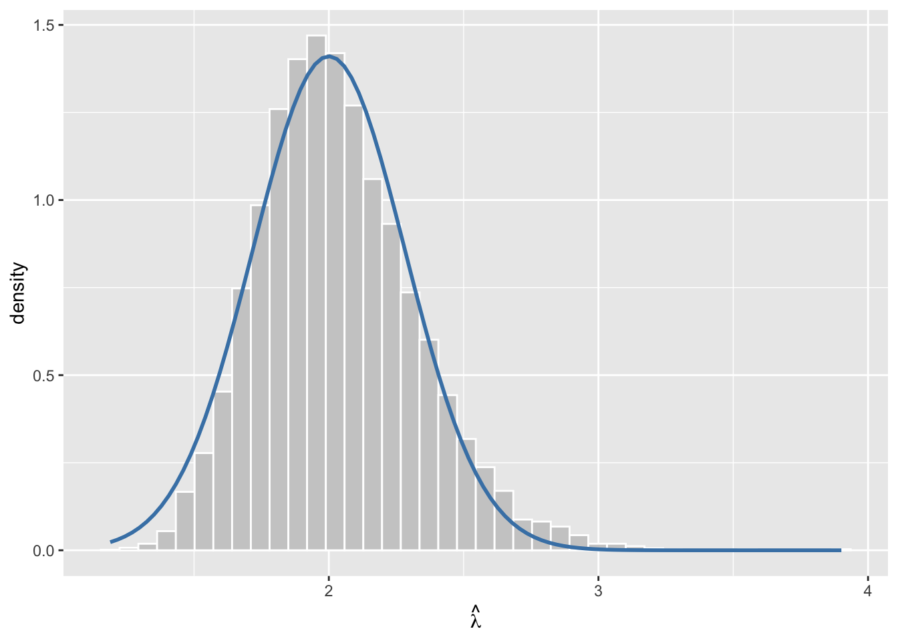

bsd_hint_my_answer <- NA # replace NA with your part (b) answer
abs(sd(replicate(10000, mean(rbinom(150, size = 1, prob = 0.05)))) - bsd_hint_my_answer) < 0.005Week 3 Exercises
Instructor and TA copy: complete solutions, always open
Complete solutions are available. Work each exercise before you open one.
These exercises practice the ideas in the week’s notes: the sampling distribution, the parametric bootstrap, the Fisher information matrix, the delta method, and evaluating confidence intervals. Read the notes first; the exercises assume them.
Do all the exercises below. The Extra Practice problems at the end are optional: they’re there if you want another repetition of a particular skill, and each one says which required exercise it pairs with.
Several exercises ask you to write down a prediction before running code. No one checks these predictions. You’ll just learn more if you commit to a guess before you peek.
If you jot down roughly how long each exercise took you, send it my way. I use it to size future sets, and right now I’m mostly guessing.
Sampling Distributions and the Bootstrap
Exercise 1 Defining the Sampling Distribution
- In your own words, state what a sampling distribution is.
- The notes give two uses for the sampling distribution. Name both.
For part (a)
The sampling distribution chapter states this definition explicitly, in one sentence, in the paragraph right before the heading “Example: The Toothpaste Cap Problem.” Find that sentence and put it in your own words, rather than reconstructing a definition from the simulation that follows it.
For part (b)
The sampling distribution chapter’s “Bias” section opens by asking how the sampling distribution actually gets used, then answers with a two-item numbered list. Read that list and name the two uses in your own words, not the notes’ phrasing.
Complete solution
A sampling distribution is the distribution an estimate would have across many hypothetical repetitions of a study, and the notes build much of the course on that one idea.
Part (a) Suppose we run the same study over and over, letting whatever part of it is random vary freely from one repetition to the next: random sampling, random assignment, or an assumed stochastic error term. Each repetition produces its own value of the estimate. The distribution of that estimate across all of those imagined repetitions is the sampling distribution.
Part (b) The notes give two uses:
- To evaluate estimators. The sampling distribution of one estimator can be preferable to the sampling distribution of another, a comparison Exercise 4 asks you to state precisely.
- To create hypothesis tests and confidence intervals. An estimate is only ever an estimate, so any claim built on it has to carry the estimate’s own uncertainty, a problem Exercise 18 takes up directly.
A natural place to slip is treating the sampling distribution as the distribution of the data: the histogram of one sample, or the population distribution the data are drawn from. Neither is right: the sampling distribution sits one level up, over hypothetical repetitions of the whole study, not over units within a single sample.
Both uses run through the rest of Week 3. Evaluating estimators is what bias and the standard error are for, and building intervals is what we do with them once we have them.
Exercise 2 SD of the Bernoulli Estimator
For a Bernoulli sample of size \(n\) with true parameter \(\pi\), \(\hat\pi = \operatorname{avg}(y)\).
- Write the general formula for \(\text{SD}(\hat\pi)\) — the SD of \(\hat\pi\)’s sampling distribution.
- For \(N = 150\) and \(\pi = 0.05\), compute the number.
For part (a)
\(\hat\pi = \operatorname{avg}(y)\) is the mean of \(n\) independent Bernoulli(\(\pi\)) draws. Turning \(\text{Var}(y_i)\) into \(\text{Var}(\hat\pi)\) takes two variance rules: one for summing independent variables, one for multiplying by a constant. The sampling distribution chapter applies both to this exact model, as its own worked example right after the definition of standard error. Open it and match its steps to your \(y_i\).
For part (b), self-check
Once you have a number for part (b), check it by simulation instead of trusting the arithmetic alone. But supply your own value first, so the code can only tell you whether the two agree, not what either one is.
Fill in bsd_hint_my_answer and run it. TRUE means your value agrees with the simulation within Monte Carlo noise.
Complete solution
The SD of \(\hat\pi\)’s sampling distribution is \(\text{SD}(\hat\pi) = \sqrt{\pi(1-\pi)/n}\) (the notes also call this \(\text{SE}(\hat\pi)\), since here \(\pi\) is the true parameter rather than an estimate). It follows from two variance rules applied in sequence: the rule for a sum of independent variables, \(\text{Var}(\sum_i y_i) = \sum_i \text{Var}(y_i)\), and the rule for multiplying by a constant, \(\text{Var}(cX) = c^2\text{Var}(X)\). Each of the \(n\) draws \(y_i\) has variance \(\pi(1-\pi)\), so \(\text{Var}(\hat\pi) = \text{Var}\!\left(\frac{1}{n}\sum_i y_i\right) = \frac{1}{n^2}\sum_i \text{Var}(y_i) = \frac{1}{n^2} \cdot n \cdot \pi(1-\pi) = \frac{\pi(1-\pi)}{n}\), and \(\text{SD}(\hat\pi)\) is the square root of that.
Part (a) \(\text{SD}(\hat\pi) = \sqrt{\dfrac{\pi(1-\pi)}{n}}\).
Part (b) Plugging in \(N = 150\) and \(\pi = 0.05\):
bsd_sd <- sqrt(0.05 * 0.95 / 150)
bsd_sd[1] 0.01779513So \(\text{SD}(\hat\pi) \approx 0.0178\).
A tempting shortcut is to stop one line early, at the variance of a single draw, \(\pi(1-\pi)\), and report its square root instead:
bsd_sd_single <- sqrt(0.05 * 0.95)
bsd_sd_single[1] 0.2179449That’s \(\approx 0.218\): the SD of one Bernoulli trial, not of the average of 150 of them. The step that the notes take before the square root, dividing the summed variance by \(n^2\) and simplifying to \(\pi(1-\pi)/n\), is exactly what shrinks the spread as \(N\) grows. If we skip it, \(\text{SD}(\hat\pi)\) comes out too big by a factor of \(\sqrt{n}\).
This SE is what a Wald confidence interval is built from: we start from \(\hat\pi\), then add and subtract a critical value times this quantity.
Exercise 3 Does the Odds Transform Preserve Unbiasedness?
\(\hat\pi\) is unbiased for \(\pi\): \(E(\hat\pi) = \pi\). Is \(\hat\pi/(1-\hat\pi)\) unbiased for the odds \(\pi/(1-\pi)\)? Answer in one sentence, and say why.
Hint
\(E(a\hat\pi + b) = aE(\hat\pi) + b\) for constants \(a\) and \(b\): expectation distributes over addition and scalar multiplication. Does it distribute over division the same way? Write out \(E\!\left(\hat\pi/(1-\hat\pi)\right)\) and try the same term-by-term move you’d use on \(a\hat\pi + b\) to find out.
Self-check
The Bernoulli bias example under the notes’ “Bias” heading sets up exactly this transformation for the toothpaste-cap problem (\(N = 150\), \(\pi = 0.05\)): it simulates \(\hat\pi\) many times, forms \(\hat\pi/(1-\hat\pi)\) on each draw, and compares the simulated average to the true odds \(\pi/(1-\pi)\). Work through that comparison (on paper, or by running the chapter’s code) to check the conclusion you reached above.
Complete solution
No: \(\hat\pi/(1-\hat\pi)\) is not unbiased for the odds, because expectation is linear and the odds transformation is not, and the notes’ simulation shows the gap actually shows up.
Recall that, by the notes’ definition of bias, the bias of the odds estimator is \(E\!\left(\dfrac{\hat\pi}{1-\hat\pi}\right) - \dfrac{\pi}{1-\pi}\), and nothing forces that difference to be zero. Linearity of expectation only guarantees the equality for an affine transformation: \(E(a\hat\pi + b) = aE(\hat\pi) + b = a\pi + b\), because expectation distributes over sums and scalar multiples. Division by \((1-\hat\pi)\) is not affine in \(\hat\pi\), so there is no reason \(E\!\left(\hat\pi/(1-\hat\pi)\right)\) should equal \(E(\hat\pi)/(1-E(\hat\pi)) = \pi/(1-\pi)\), even though \(\hat\pi\) itself is exactly unbiased.
It’s tempting to slide the expectation inside the ratio anyway, treating \(E(\hat\pi/(1-\hat\pi)) = E(\hat\pi)/(1-E(\hat\pi))\) as if expectation commutes with any function of \(\hat\pi\), the way it commutes with \(a\hat\pi + b\). It only commutes with affine functions. Unbiasedness of \(\hat\pi\) says nothing about \(\hat\pi/(1-\hat\pi)\) beyond that one point.
This isn’t just a possibility the algebra leaves open. The notes’ odds simulation runs the check for the toothpaste-cap Bernoulli case (\(N = 150\), \(\pi = 0.05\)): it draws \(\hat\pi\) many times, forms \(\hat\pi/(1-\hat\pi)\) on each draw, and compares the simulated mean to the true odds. The notes describe the resulting bias as small but detectable across 100,000 Monte Carlo draws. The definition of bias rules nothing out on its own, and the simulation is what pins the gap down for a specific \(\pi\) and \(N\).
Which functions push the bias up and which push it down is a question we take up later this week, using Jensen’s inequality.
Exercise 4 Bias versus Standard Error
The notes give bias and the standard error separate definitions, both properties of \(\hat{\theta}\)’s sampling distribution. State the difference in one sentence each:
- What does it mean for \(\hat{\theta}\) to be biased?
- What does the standard error of \(\hat{\theta}\) measure?
Hint
The notes give bias and the standard error their own sections, each with a labeled definition box: one under the Bias heading, one under the Standard Error heading. Reread the box for each term and write your own one-sentence version of it rather than quoting it directly: the exercise is checking that you can restate the idea, not that you can find it.
Self-check
Once you’ve drafted sentences for (a) and (b), try swapping them: read your (a) sentence as if it were answering (b), and vice versa. If either one still sounds like a reasonable description of the other property, it isn’t specific enough yet. Revise it so it only fits the definition it’s paraphrasing.
Complete solution
Bias and the standard error describe two different features of \(\hat{\theta}\)’s sampling distribution: bias is about where that distribution is centered, and the standard error is about how spread out it is.
Part (a) By the notes’ definition of bias, \(\hat{\theta}\) is biased if \(E(\hat{\theta}) \neq \theta\): its sampling distribution is not centered on the true \(\theta\). Thus, the bias itself is the size of that miss, \(E(\hat{\theta}) - \theta\).
Part (b) By the notes’ definition of the standard error, the standard error is the standard deviation of \(\hat{\theta}\)’s sampling distribution: how much \(\hat{\theta}\) would vary from sample to sample, not whether it is centered on \(\theta\).
A tempting shortcut is to look at the one sample we actually have, compute \(\hat{\theta} - \theta\), and call that the bias. It isn’t: that difference is a single draw from the sampling distribution, while the bias is the expectation \(E(\hat{\theta}) - \theta\), which describes the whole distribution, not one draw from it. A single estimate can land far from \(\theta\) even when \(\hat{\theta}\) is unbiased. That’s what a nonzero standard error means, not a nonzero bias.
Both properties keep resurfacing for the rest of Week 3. The standard error is what a confidence interval is built from, and bias is what we check whenever we transform an estimator into something else.
Exercise 5 Steps of the Parametric Bootstrap
In your own words, state the four steps of the parametric bootstrap algorithm from the notes’ chapter on the parametric bootstrap. Answer in one sentence per step.
- What do you need before you start — the algorithm’s inputs?
- What’s the first thing you compute, using just the observed data?
- What happens once, for each of the \(B\) replicates \(b = 1, \dots, B\)?
- Once you have all \(B\) replicate values, what do you do with them?
Hint
The chapter on the parametric bootstrap sets its steps off in a box labeled “Algorithm: Parametric Bootstrap Estimator,” right after the callout note comparing the parametric bootstrap to its nonparametric alternative. That box numbers on two levels: an outer list, and, inside one of its items, an inner list of the actions that happen together on a single pass. Match each part below to one outer item: the item that contains the inner list is still just one of them.
Self-check for part (c)
Self-check: once you’ve drafted your sentence for part (c), reread the first sub-item under the b-loop in the algorithm box (the one carrying a footnote) and compare it to what you wrote. If your sentence has the algorithm resampling the observed data points instead, that’s the nonparametric bootstrap. Revise your sentence to match what that sub-item says instead.
Complete solution
The parametric bootstrap has four steps: fix what we need, get one estimate from the real data, simulate-and-refit that many times, and summarize the replicates.
Part (a) We need the observed data \(x_1, x_2, \dots, x_n\), a parametric model \(f(\theta)\), an estimator \(\hat\theta\), and the quantity of interest \(\hat\tau = \tau(\hat\theta)\) (whatever function of \(\hat\theta\) you actually want a CI or SE for).
Part (b) Compute \(\hat\theta\) from the observed data, the same way we always would. This single estimate is what everything else bootstraps around.
Part (c) For \(b = 1, 2, \dots, B\): we draw a new data set of size \(n\) from \(f(\hat\theta)\), fit the model to it to get \(\hat\theta^{*(b)}\), then compute \(\hat\tau^{*(b)} = \tau(\hat\theta^{*(b)})\). That’s three actions, but they’re one step of the algorithm, repeated \(B\) times: the notes’ numbered sub-list sits inside step 3, not four more steps.
It’s tempting to describe “draw a new data set” as resample the observed \(x_i\)’s with replacement. That’s the nonparametric bootstrap, which the notes set aside for later in the semester. Here we draw from the fitted model \(f(\hat\theta)\) instead (a simulated data set, not a reshuffled one). Swap that step and you’ve described a different algorithm than the one the chapter names.
Part (d) Across \(\hat\tau^{*(1)}, \hat\tau^{*(2)}, \dots, \hat\tau^{*(B)}\), we use the SD to estimate \(\widehat{\text{SE}}(\hat\theta)\), or the 5th and 95th percentiles for a 90% confidence interval.
You’ll code exactly this loop in R later this week.
Fisher Information
Exercise 6 Observed Information to Standard Errors
Here is an observed information matrix for a two-parameter model, evaluated at \(\hat\theta = (\hat\theta_1, \hat\theta_2)\):
\[ \mathcal{I}_{\text{obs}}(\hat\theta) = \begin{bmatrix} 5 & 1 \\ 1 & 2 \end{bmatrix} \]
By hand:
- Find \(\widehat{\text{SE}}(\hat\theta_1)\).
- Find \(\widehat{\text{SE}}(\hat\theta_2)\).
Hint 1
The Fisher information chapter’s section on more than two parameters writes out this same problem for a general \(k \times k\) matrix. It shows exactly what gets inverted, and in what order, to reach \(\widehat{\operatorname{Var}}(\hat\theta)\). Line up your \(2\times2\) case against that pattern before doing any arithmetic on \(\mathcal{I}_{\text{obs}}(\hat\theta)\).
Hint 2
The notes never spell out how to invert a \(2\times2\) matrix by hand, so here is the rule: for \(\begin{bmatrix} a & b \\ c & d \end{bmatrix}\), the inverse is \(\dfrac{1}{ad-bc}\begin{bmatrix} d & -b \\ -c & a \end{bmatrix}\). In words: swap the two diagonal entries, negate the two off-diagonal entries, and divide the result by the determinant \(ad-bc\). Apply that to \(\mathcal{I}_{\text{obs}}(\hat\theta)\) to get \(\widehat{\operatorname{Var}}(\hat\theta)\).
Complete solution
We get both standard errors from the diagonal of \(\mathcal{I}_{\text{obs}}(\hat\theta)^{-1}\), so the first job is to invert the whole matrix, not just read off its diagonal.
Determinant. \(\det \mathcal{I}_{\text{obs}}(\hat\theta) = (5)(2) - (1)(1) = 9\).
Invert. For a \(2\times 2\) matrix, we swap the two diagonal entries, negate the two off-diagonal entries, and divide everything by the determinant:
\[ \mathcal{I}_{\text{obs}}(\hat\theta)^{-1} = \frac{1}{9}\begin{bmatrix} 2 & -1 \\ -1 & 5 \end{bmatrix} \]
That matrix is \(\widehat{\operatorname{Var}}(\hat\theta)\): its diagonal holds the variances and its off-diagonal holds the covariance between \(\hat\theta_1\) and \(\hat\theta_2\). So \(\widehat{\operatorname{Var}}(\hat\theta_1) = 2/9\) and \(\widehat{\operatorname{Var}}(\hat\theta_2) = 5/9\).
Square root.
Part (a) \(\widehat{\text{SE}}(\hat\theta_1) = \sqrt{2/9} \approx 0.471\). Part (b) \(\widehat{\text{SE}}(\hat\theta_2) = \sqrt{5/9} \approx 0.745\).
its_I_obs <- matrix(c(5, 1,
1, 2),
nrow = 2, byrow = TRUE)
its_V_hat <- solve(its_I_obs)
print(its_V_hat) [,1] [,2]
[1,] 0.2222222 -0.1111111
[2,] -0.1111111 0.5555556its_se <- sqrt(diag(its_V_hat))
print(its_se)[1] 0.4714045 0.7453560its_se_wrong <- 1 / sqrt(diag(its_I_obs))
print(its_se_wrong)[1] 0.4472136 0.7071068It’s tempting to skip the inversion and read \(\widehat{\text{SE}}(\hat\theta_i)\) straight off the diagonal, \(\widehat{\text{SE}}(\hat\theta_i) = 1/\sqrt{\mathcal{I}_{\text{obs}}(\hat\theta)_{ii}}\) (exactly the single-parameter recipe from earlier in the chapter, applied entry by entry). It gives \(1/\sqrt5 \approx 0.447\) and \(1/\sqrt2 \approx 0.707\): close to the answers above but not equal to them, and wrong. That shortcut is correct only when the off-diagonal entries of \(\mathcal{I}_{\text{obs}}(\hat\theta)\) are zero, because only then does inverting the matrix reduce to inverting each diagonal entry on its own. We can see the off-diagonal entries are 1 here, so \(\hat\theta_1\) and \(\hat\theta_2\) are correlated, and skipping the inversion throws that correlation away.
So, we can build a Wald interval for either parameter from these two standard errors.
Exercise 7 Hessian to Covariance Matrix
You’ve fit a model with optim(par, fn, control = list(fnscale = -1), hessian = TRUE), where fn returns the log-likelihood \(\ell(\theta)\), not its negative, and the result is stored in est. Write the one line of R that turns est$hessian into \(\widehat{\operatorname{Var}}(\hat\theta)\), the estimated covariance matrix of \(\hat\theta\).
Hint
You already know from the call in the prompt that fn computes \(\ell(\theta)\) directly, not \(-\ell(\theta)\): fnscale = -1 only tells optim() how to treat that value internally while it searches. The beta-model walkthrough in the Fisher information chapter builds a call structured exactly like yours, optim(..., control = list(fnscale = -1), hessian = TRUE), and the numbered comment on that hessian = TRUE line settles what the returned hessian is a Hessian of. Reread that comment before you decide what has to happen to est$hessian on the way to a covariance matrix.
Self-check
A covariance matrix cannot have negative diagonal entries. Fit any model with optim(..., hessian = TRUE), apply your candidate line, and check diag() of the result: non-negative entries confirm the sign is resolved, a negative entry means it isn’t.
Complete solution
The line is solve(-est$hessian).
fnscale = -1 tells optim() what to minimize; it does not change which function’s Hessian gets computed. optim() always returns the Hessian of fn itself (here, \(\ell(\theta)\)), evaluated at \(\hat\theta\). Because \(\ell\) is concave at its maximum, est$hessian is negative definite, and \(\mathcal{I}_{\text{obs}}(\hat\theta) = -\nabla^2\ell(\hat\theta) = -\texttt{est\$hessian}\). Asymptotic theory gives us \(\widehat{\operatorname{Var}}(\hat\theta) \approx \mathcal{I}_{\text{obs}}(\hat\theta)^{-1}\). So inverting -est$hessian returns the covariance matrix.
A small self-contained fit shows it:
set.seed(5747)
htc_y <- rbeta(200, shape1 = 6, shape2 = 3)
htc_ll_fn <- function(theta, y) {
alpha <- theta[1]
beta <- theta[2]
sum(dbeta(y, shape1 = alpha, shape2 = beta, log = TRUE))
}
htc_est <- optim(
par = c(4, 2),
fn = htc_ll_fn,
y = htc_y,
control = list(fnscale = -1),
method = "BFGS",
hessian = TRUE
)
htc_var_hat <- solve(-htc_est$hessian)
htc_var_hat [,1] [,2]
[1,] 0.4995271 0.2060847
[2,] 0.2060847 0.1056348sqrt(diag(htc_var_hat))[1] 0.7067723 0.3250150We obtain \(\hat\alpha \approx 7.09\) and \(\hat\beta \approx 3.39\) (true values 6 and 3), with \(\widehat{\text{SE}}(\hat\alpha) \approx 0.707\) and \(\widehat{\text{SE}}(\hat\beta) \approx 0.325\).
A natural shortcut skips the negative sign, reasoning that fnscale = -1 already made optim() work with \(-\ell\), so est$hessian must already be the information matrix. It doesn’t. fnscale changes only the optimization target. Skipping the sign turns variances negative, which is the tell:
diag(solve(htc_est$hessian))[1] -0.4995271 -0.1056348Both diagonal entries come out negative (\(\approx -0.500\) and \(-0.106\)), which no variance can be.
In practice, any standard error we take from a fitted model starts here. optim() hands back curvature, and this line is what turns it into \(\widehat{\operatorname{Var}}(\hat\theta)\).
Exercise 8 The Wald Interval Formula
Write the general formula for a Wald confidence interval on a scalar parameter \(\hat\theta\) estimated by maximum likelihood.
- The 90% interval.
- The 95% interval.
Hint
The Fisher information chapter has a section right after it finishes the general variance-matrix formula for several parameters (titled “From Curvature to Wald Confidence Intervals”) that works out this exact interval: a scalar parameter estimated by maximum likelihood, at 90% and 95%. Open that section and adapt what’s there to your own notation.
Self-check
Once you’ve written both intervals, check your critical values independently of the notes: a two-sided interval splits its leftover probability evenly between the two tails, so the tail probability you hand to R’s qnorm() isn’t your confidence level itself.
# tail probability = 1 - (1 - confidence level) / 2
qnorm(0.95) # should match your critical value for part (a)
qnorm(0.975) # should match your critical value for part (b)Complete solution
The Wald interval always has the same shape: we take the estimate, add or subtract a critical value times that parameter’s own standard error, and only the critical value changes with the confidence level.
Part (a) \(90\%~\text{C.I.} = \hat\theta \pm 1.64 \cdot \widehat{\text{SE}}(\hat\theta)\)
Part (b) \(95\%~\text{C.I.} = \hat\theta \pm 1.96 \cdot \widehat{\text{SE}}(\hat\theta)\)
A tempting slip: the notes’ line right after this formula says you need “the variance matrix \(\widehat{\operatorname{Var}}(\hat\theta) = \mathcal{I}_{\text{obs}}(\hat\theta)^{-1}\),” which invites writing \(\hat\theta \pm 1.96 \cdot \widehat{\operatorname{Var}}(\hat\theta)\) directly. That’s wrong: the interval is built on the standard error \(\widehat{\text{SE}}(\hat\theta) = \sqrt{\widehat{\operatorname{Var}}(\hat\theta)}\), not the variance itself. The variance matrix is what you need to get the SE, one square root short of the number that actually belongs in the formula.
This is the formula whose coverage we check later this week. An interval is only as good as the fraction of the time it actually contains the parameter.
The Delta Method
Exercise 9 The Delta-Method Variance Formula
In the one-parameter case, write the delta-method approximation for \(\widehat{\operatorname{Var}}[\tau(\hat\theta)]\) in terms of \(\tau'(\hat\theta)\) and \(\widehat{\operatorname{Var}}(\hat\theta)\).
Hint
The chapter builds this exact one-parameter result from a first-order Taylor expansion of \(\tau\) around \(\hat\theta\), in the discussion right before the worked examples that follow (the Bernoulli odds, the Poisson SD, and the beta mean). Which classic rule for the variance of a linear transformation does that expansion invoke? Reread that discussion and use the rule it names to fix the form of your answer.
Self-check
A variance can never be negative, no matter the sign of \(\tau'(\hat\theta)\). Plenty of transformations \(\tau\) are decreasing, which makes \(\tau'(\hat\theta)\) negative. Take your candidate formula and ask whether it could go negative for such a \(\tau\), given that \(\widehat{\operatorname{Var}}(\hat\theta)\) itself is never negative. A linear (unsquared) power on \(\tau'(\hat\theta)\) can flip the sign of the whole expression, so any candidate built that way cannot be right.
Complete solution
The delta method turns the derivative \(\tau'(\hat\theta)\) into a scaling factor on \(\widehat{\operatorname{Var}}(\hat\theta)\):
\[ \widehat{\operatorname{Var}}[\tau(\hat\theta)] \approx \big(\tau'(\hat\theta)\big)^2 \cdot \widehat{\operatorname{Var}}(\hat\theta). \]
The square on \(\tau'(\hat\theta)\) comes from \(\operatorname{Var}(cX) = c^2 \operatorname{Var}(X)\): the linear approximation treats \(\tau(\hat\theta)\) as a constant \(\tau'(\hat\theta)\) times \(\hat\theta\), so the variance picks up the derivative squared, not the derivative itself.
A tempting shortcut is to drop the square and write \(\widehat{\operatorname{Var}}[\tau(\hat\theta)] \approx \tau'(\hat\theta) \cdot \widehat{\operatorname{Var}}(\hat\theta)\), on the reasoning that the Taylor expansion is linear. That reasoning is correct on the standard-error scale (\(\widehat{\text{SE}}[\tau(\hat\theta)] \approx |\tau'(\hat\theta)| \cdot \widehat{\text{SE}}(\hat\theta)\)), but variance is a squared quantity, so the exponent on \(\tau'(\hat\theta)\) does not carry over unchanged from the SE version to the variance version.
We’ll reach for this formula whenever the quantity we care about is a transformation of the parameter we actually estimated.
Exercise 10 Gradient of a Ratio
Let \(\tau(a, b) = \dfrac{a}{a+b}\) — the same ratio form as the beta mean in the notes, but with generic \(a\) and \(b\) in place of \(\alpha\) and \(\beta\).
- Find \(\dfrac{\partial \tau}{\partial a}\) and \(\dfrac{\partial \tau}{\partial b}\).
- Assemble your two partials into the gradient \(\nabla \tau(a, b)\).
Hint
The delta-method chapter uses \(\nabla\tau(\hat\theta)\) throughout but never restates the calculus rule for differentiating a ratio, so it’s worth having on hand: for \(\tau = u/v\), \(\dfrac{\partial \tau}{\partial x} = \dfrac{u'v - uv'}{v^2}\), where \(u'\) and \(v'\) are the derivatives of \(u\) and \(v\) with respect to \(x\). Set \(u = a\) and \(v = a+b\), then apply the rule twice: once differentiating with respect to \(a\) with \(b\) held fixed, once differentiating with respect to \(b\) with \(a\) held fixed.
Self-check
Once you have both partials, check them numerically rather than eyeballing the signs. numDeriv::grad() (the delta-method chapter’s own numerical-gradient section uses it the same way) nudges each argument of a function and reports how the output moves, giving you a numerical gradient to compare against your analytic one.
gr_hint_tau <- function(theta) {
a <- theta[1]
b <- theta[2]
a / (a + b)
}
gr_hint_point <- c(a = 3, b = 7)
numDeriv::grad(gr_hint_tau, gr_hint_point)
# now evaluate your own d/da and d/db formulas at gr_hint_point and compareComplete solution
This is the quotient rule applied twice to the same ratio, holding a different variable fixed each time: the notes work out exactly this derivative for the beta mean, just with \(\alpha\) and \(\beta\) standing in for \(a\) and \(b\).
Part (a) The quotient rule gives \(\dfrac{\partial}{\partial x}\left(\dfrac{u}{v}\right) = \dfrac{u'v - uv'}{v^2}\). Here \(u = a\) and \(v = a + b\).
Holding \(b\) fixed and differentiating with respect to \(a\), we have \(u' = 1\) and \(v' = 1\), so
\[ \frac{\partial \tau}{\partial a} = \frac{1 \cdot (a+b) - a \cdot 1}{(a+b)^2} = \frac{b}{(a+b)^2}. \]
Holding \(a\) fixed and differentiating with respect to \(b\): \(u = a\) does not involve \(b\), so \(u' = 0\), while \(v' = 1\), so
\[ \frac{\partial \tau}{\partial b} = \frac{0 \cdot (a+b) - a \cdot 1}{(a+b)^2} = -\frac{a}{(a+b)^2}. \]
It’s tempting to look at \(\partial \tau/\partial a = b/(a+b)^2\) and guess that swapping letters gives \(\partial \tau/\partial b = a/(a+b)^2\), positive. That guess treats \(a\) and \(b\) as interchangeable in \(\tau\), but they aren’t: \(a\) appears in both the numerator and the denominator, while \(b\) appears only in the denominator. That asymmetry is exactly why the two partials come out with opposite signs, not the same magnitude with the letters relabeled.
Part (b) Stacking the two partials the way the notes do,
\[ \nabla \tau(a,b) = \begin{bmatrix} \dfrac{\partial \tau}{\partial a} \\[6pt] \dfrac{\partial \tau}{\partial b} \end{bmatrix} = \begin{bmatrix} \dfrac{b}{(a+b)^2} \\[6pt] -\dfrac{a}{(a+b)^2} \end{bmatrix}. \]
As a check, numDeriv::grad() computes a gradient numerically instead of symbolically, by nudging each argument and watching how the function’s output moves. At \((a,b) = (2,5)\) we find the two partials work out to \(5/49 \approx 0.102\) and \(-2/49 \approx -0.0408\):
library(numDeriv)
gr_tau <- function(theta) {
a <- theta[1]
b <- theta[2]
a / (a + b)
}
gr_point <- c(a = 2, b = 5)
gr_analytic <- c(
d_da = gr_point[["b"]] / (gr_point[["a"]] + gr_point[["b"]])^2,
d_db = -gr_point[["a"]] / (gr_point[["a"]] + gr_point[["b"]])^2
)
gr_numeric <- grad(gr_tau, gr_point)
gr_analytic d_da d_db
0.10204082 -0.04081633 gr_numeric[1] 0.10204082 -0.04081633The analytic and numerical gradients agree to at least six decimal places. This is the general form of the derivative a delta-method SE needs. Later this week you’ll evaluate one of these at fitted values and push a covariance matrix through it.
Bias and Precision
Exercise 11 Average versus Median
Suppose you plan to sample \(N\) observations from a normal distribution and use the sample to estimate the center of the distribution. You are choosing between two estimators: the sample average \(\operatorname{avg}(y)\) and the sample median. Before you run anything, predict which of the two has the smaller SE, and explain why using a mechanism — not a guess, and not “because a simulation shows it.”
Check your prediction with a Monte Carlo simulation. Choose a sample size \(N\), a mean \(\mu\), and an SD \(\sigma\); choose a number of simulated samples, and set a seed. For each simulated sample of size \(N\) drawn from a normal(\(\mu\), \(\sigma\)) distribution, compute \(\operatorname{avg}(y)\) and the median. Treat the SD of the resulting averages across simulations as a Monte Carlo estimate of the SE of \(\operatorname{avg}(y)\), and do the same for the median. Report both estimated SEs and their ratio. Does the ratio match your prediction in (a)?
For part (a)
The notes define the SE as simply the standard deviation of the sampling distribution, and the normal-model example works out \(\text{Var}[\operatorname{avg}(y)] = \sigma^2/N\) because \(\operatorname{avg}(y)\) can be written as the explicit sum \(\frac{1}{N}\sum_{i=1}^N y_i\), to which the variance-of-independent-sum rule applies term by term. Can you write the sample median as that same kind of explicit weighted sum of \(y_1, \dots, y_N\)? Write both estimators as explicit formulas in the data before you commit to a prediction, and build your explanation from that comparison.
For part (b), self-check
The sampling-distribution chapter’s Standard Error section already runs this exact workflow in its “Example: Exponential Model”: loop over many simulated samples, recompute the estimator on each one, and take the SD of the resulting vector as the simulated SE. It does this for a case where the SE has no clean closed form. Adapt that loop by drawing from rnorm() and computing both mean() and median() inside each iteration. Once you have a simulated SE for \(\operatorname{avg}(y)\), compare it to \(\sigma/\sqrt{N}\) using the \(\mu\), \(\sigma\), and \(N\) you chose, since the notes show this is the exact SE of \(\operatorname{avg}(y)\) for a normal model. A mismatch there means a bug to chase down before you trust the ratio.
Complete solution
We predict \(\operatorname{avg}(y)\) has the smaller SE, because it is a linear combination of every observation, while the median depends only on the rank of the observations near the center.
Part (a) \(\operatorname{avg}(y) = \frac{1}{N}\sum_{i=1}^N y_i\) weights every observation equally by \(1/N\). Because the \(y_i\) are independent, we can decompose its variance exactly by the variance of independent sum rule the notes use to derive \(\text{Var}[\operatorname{avg}(y)] = \sigma^2/N\): each observation’s distance from the center contributes to that sum. The median is not a linear function of the data. It is the value of one sorted observation (or the average of two), so it uses only the rank of the observations near the middle and discards the magnitude information the rest of the sample carries. For data that really are normal, with no outliers to guard against, discarding that magnitude information costs precision, so \(\operatorname{avg}(y)\) should have the smaller SE.
It’s tempting to reason instead that the median must have the smaller SE because it is more robust to outliers. But robustness and a small SE are different properties, and here they point opposite ways. The median’s robustness comes from bounding how much any single extreme observation can move it (useful when the data may contain outliers or come from a heavy-tailed distribution). Under a normal model, there is nothing to guard against, so that same insensitivity only throws away information \(\operatorname{avg}(y)\) uses, and the median ends up less precise, not more.
Part (b)
set.seed(20260903)
mm_n <- 30
mm_mu <- 0
mm_sigma <- 1
mm_n_sims <- 20000
mm_avgs <- numeric(mm_n_sims)
mm_medians <- numeric(mm_n_sims)
for (i in 1:mm_n_sims) {
mm_y <- rnorm(mm_n, mean = mm_mu, sd = mm_sigma)
mm_avgs[i] <- mean(mm_y)
mm_medians[i] <- median(mm_y)
}
mm_se_avg <- sd(mm_avgs)
mm_se_median <- sd(mm_medians)
mm_ratio <- mm_se_median / mm_se_avg
mm_se_avg[1] 0.1830371mm_se_median[1] 0.2246245mm_ratio[1] 1.227208With \(N = 30\), \(\mu = 0\), \(\sigma = 1\), and 20,000 simulated samples, we get a Monte Carlo estimate of about 0.183 for the SE of \(\operatorname{avg}(y)\) and about 0.225 for the median, a ratio of about 1.23. The median’s SE is about 23% larger, confirming the prediction in (a). Notice that the average’s simulated SE also lands almost exactly on the familiar quantity \(\sigma/\sqrt{N} = 1/\sqrt{30} \approx 0.183\) the notes derive for \(\operatorname{avg}(y)\), which is a second check that the simulation is doing what it claims.
The repeated-sampling logic here (generate replicate samples, recompute the estimator on each, and treat the spread of the results as its SE) is exactly the logic of the parametric bootstrap. The one change later this week is that you’ll draw the replicate samples from the fitted model instead of the true one, because with real data we don’t know the parameters that generated it.
Exercise 12 One Unbiased, One Biased
Let \(X_1, \dots, X_N\) be an iid sample from an exponential distribution with rate \(\lambda\), so \(E(X) = 1/\lambda\). Define the population mean \(\mu = 1/\lambda\), estimated by \(\hat\mu = \operatorname{avg}(x)\), and recall from Week 2’s exercise “The Exponential Model” that the ML estimate of the rate is \(\hat\lambda = 1/\operatorname{avg}(x)\).
- Show that \(\hat\mu = \operatorname{avg}(x)\) is unbiased for \(\mu\).
- Show that \(\hat\lambda = 1/\operatorname{avg}(x)\) is biased for \(\lambda\), and say whether it over- or underestimates \(\lambda\) on average.
For part (a)
The notes’ definition of bias says \(\hat\theta\) is unbiased exactly when \(E(\hat\theta) = \theta\), not merely close to it. Write \(\operatorname{avg}(x)\) as \(\frac{1}{N}\sum_{i=1}^N X_i\), take the expectation of that sum directly, and use the fact that expectation is linear and every \(X_i\) shares the same expectation as \(X\).
For part (b)
Part (a)’s trick relied on \(g(t) = t\) being linear, so the expectation passed straight through the sum. \(g(t) = 1/t\) is not linear, so that trick does not carry over to \(\hat\lambda = 1/\operatorname{avg}(x)\). Check whether \(g(t) = 1/t\) is convex or concave for \(t > 0\) by computing its second derivative, which determines which way Jensen’s inequality runs: for a convex \(g\), \(g(E[T]) \leq E[g(T)]\), and for a concave \(g\) the inequality reverses. Apply whichever branch matches your check, with \(T = \operatorname{avg}(x)\).
Complete solution
The sample average \(\operatorname{avg}(x)\) is unbiased for \(\mu\) full stop, but \(\hat\lambda\) is a nonlinear function wrapped around that same average, and passing an unbiased estimator through a nonlinear function does not, in general, preserve unbiasedness. Jensen’s inequality pins down which way it moves for a convex function like \(1/x\).
Part a. We take the expectation of \(\hat\mu\) directly.
\[ \begin{align*} E(\hat\mu) &= E\left[\operatorname{avg}(x)\right] \\ &= E\left(\frac{1}{N}\sum_{i=1}^N X_i\right) && \text{definition of } \operatorname{avg}(x) \\ &= \frac{1}{N}\sum_{i=1}^N E(X_i) && \text{linearity of expectation} \\ &= \frac{1}{N}\cdot N \cdot E(X) && X_i \text{ are iid} \\ &= E(X) = \frac{1}{\lambda} = \mu. \end{align*} \]
\(\hat\mu\) is unbiased for \(\mu\): \(\operatorname{avg}(x)\) is a linear combination of the \(X_i\), so the expectation passes straight through the sum.
Part b. \(\hat\lambda = 1/\operatorname{avg}(x) = g(\operatorname{avg}(x))\) for \(g(t) = 1/t\), and \(g\) is convex for \(t > 0\): its second derivative \(g''(t) = 2/t^3\) is positive throughout. Jensen’s inequality says that for a convex \(g\), \(g(E[T]) \leq E[g(T)]\), with strict inequality unless \(T\) is degenerate. Take \(T = \operatorname{avg}(x)\), which is not degenerate here. Then
\[ E(\hat\lambda) = E\left[g(\operatorname{avg}(x))\right] > g\left(E\left[\operatorname{avg}(x)\right]\right) = g(\mu) = \frac{1}{\mu} = \lambda, \]
using part a’s result that \(E[\operatorname{avg}(x)] = \mu\) for the middle step. So \(E(\hat\lambda) > \lambda\): \(\hat\lambda\) overestimates the rate on average. The gap is exactly what Jensen’s inequality predicts for a convex transformation: it is not a quirk of the exponential distribution or of small samples, though small samples typically make it larger.
It is tempting to reason the other way: since \(\hat\mu = \operatorname{avg}(x)\) is unbiased for \(\mu\), and \(\hat\lambda = 1/\hat\mu\), surely \(\hat\lambda\) is “automatically” unbiased for \(\lambda = 1/\mu\), as if unbiasedness carried through the reciprocal the same way it carried through the sum in part a. It does not. Unbiasedness is preserved under an affine transformation \(g(t) = at + b\), because then \(E[g(\hat\mu)] = g(E[\hat\mu])\) exactly: expectation and the transformation commute. The reciprocal is not affine, so nothing guarantees \(E[g(\hat\mu)] = g(E[\hat\mu])\). Part b shows that for this particular convex \(g\), the two sides differ, and in a predictable direction.
A short simulation confirms both directions of the argument at once.
set.seed(5747)
jb_lambda <- 2 # true rate
jb_n <- 5 # small sample size, so the gap is easy to see
jb_n_sims <- 100000 # monte carlo replicates
jb_mu_hat <- numeric(jb_n_sims) # container for avg(x)
jb_lambda_hat <- numeric(jb_n_sims) # container for 1 / avg(x)
for (s in 1:jb_n_sims) {
jb_x <- rexp(jb_n, rate = jb_lambda)
jb_mu_hat[s] <- mean(jb_x)
jb_lambda_hat[s] <- 1 / mean(jb_x)
}
mean(jb_mu_hat) # close to the true mu = 1 / lambda = 0.5[1] 0.5015625mean(jb_lambda_hat) # noticeably above the true lambda = 2[1] 2.487914Across 100,000 simulated samples of size \(N = 5\) from an \(\text{Exponential}(\lambda = 2)\) distribution, \(\operatorname{avg}(\hat\mu) \approx 0.502\) sits right on the true \(\mu = 0.5\), while \(\operatorname{avg}(\hat\lambda) \approx 2.49\) sits well above the true \(\lambda = 2\). That is the same upward bias part b derives.
This is the gap the delta method exists to handle: knowing that \(\hat\mu\) is unbiased tells us nothing, by itself, about the bias or the spread of \(\hat\lambda = 1/\hat\mu\). You’ll put this to work later this week, where the delta method is what turns a Fisher-information SE for \(\hat\lambda\) into an SE for \(\hat\mu\) without assuming anything survives the reciprocal unchanged.
Standard Errors in Practice
Exercise 13 The Poisson Standard Error
Suppose \(y_1, \dots, y_N\) are an iid sample from a Poisson model, \(f(y_i \mid \lambda) = \dfrac{\lambda^{y_i} e^{-\lambda}}{y_i!}\) for \(y_i = 0, 1, 2, \dots\). Derive \(\widehat{\text{SE}}(\hat\lambda)\) from the observed Fisher information, using the same steps as the exponential example in the notes.
- Write the log-likelihood \(\ell(\lambda)\) for the sample and find the score function \(\partial \ell(\lambda)/\partial \lambda\).
- Find the second derivative \(\partial^2 \ell(\lambda)/\partial \lambda^2\), and set the score to zero to solve for \(\hat\lambda\).
- Evaluate the second derivative at \(\hat\lambda\) to get the observed information \(\mathcal I_{\text{obs}}(\hat\lambda)\), invert it, and take the square root to get \(\widehat{\text{SE}}(\hat\lambda)\).
For part (a)
Two familiar log rules (the power rule and the product rule for logarithms) turn the product inside the Poisson pmf into a sum you can differentiate term by term. Apply both to \(\log\!\left(\lambda^{y_i}e^{-\lambda}/y_i!\right)\) before summing over \(i\). One of the resulting three terms will not involve \(\lambda\) at all.
For part (c)
Part (b) already gives you \(\sum_{i=1}^N y_i\) written in terms of \(N\) and \(\hat\lambda\). Substitute that expression into the second derivative before evaluating at \(\hat\lambda\), rather than evaluating with the raw sum still sitting in the formula.
Complete solution
The Poisson recipe matches the exponential example exactly: the score is linear in \(\sum_{i=1}^N y_i\), so the second derivative, and therefore the observed information, depends on the data only through \(\hat\lambda\) itself.
Part (a) The log-likelihood is \[ \ell(\lambda) = \sum_{i=1}^N \log\left[\frac{\lambda^{y_i} e^{-\lambda}}{y_i!}\right] = \left(\sum_{i=1}^N y_i\right) \log\lambda - N\lambda - \sum_{i=1}^N \log(y_i!), \] using \(\log(a^b) = b\log(a)\) on \(\lambda^{y_i}\) and \(\log(ab) = \log(a) + \log(b)\) to split the product inside the sum. Differentiating with respect to \(\lambda\), we obtain the score \[ \frac{\partial \ell(\lambda)}{\partial \lambda} = \frac{1}{\lambda}\sum_{i=1}^N y_i - N. \]
Part (b) Differentiating again, we get \[ \frac{\partial^2 \ell(\lambda)}{\partial \lambda^2} = -\frac{1}{\lambda^2}\sum_{i=1}^N y_i. \] Setting the score to zero, \(\frac{1}{\hat\lambda}\sum_{i=1}^N y_i = N\), so \(\hat\lambda = \frac{1}{N}\sum_{i=1}^N y_i = \operatorname{avg}(y)\), confirming the estimate the notes use.
Part (c) Evaluate the second derivative at \(\hat\lambda\). Since \(\sum_{i=1}^N y_i = N\hat\lambda\) from (b), \[ \left.\frac{\partial^2 \ell(\lambda)}{\partial \lambda^2}\right|_{\lambda = \hat\lambda} = -\frac{N\hat\lambda}{\hat\lambda^2} = -\frac{N}{\hat\lambda}, \] so the observed information is \(\mathcal I_{\text{obs}}(\hat\lambda) = N/\hat\lambda\). Inverting gives \(\widehat{\operatorname{Var}}(\hat\lambda) \approx \hat\lambda/N\), and taking the square root, we have \[ \widehat{\text{SE}}(\hat\lambda) \approx \sqrt{\frac{\hat\lambda}{N}}. \]
A tempting shortcut: if you recall from an earlier stats course that the Fisher information of a single Poisson draw is \(1/\lambda\) and invert that directly, you get \(\widehat{\text{SE}}(\hat\lambda) \approx \sqrt{\hat\lambda}\): no \(N\) anywhere. That is the per-observation information. Part (a) sums the log-likelihood over all \(N\) observations before differentiating, so the observed information is \(N\) times as large, and \(N\) has to show up in the standard error of a sample.
We’ll plug \(\widehat{\text{SE}}(\hat\lambda) \approx \sqrt{\hat\lambda/N}\) straight into real count data later this week.
Exercise 14 The Bogotá Operations Mismatch
In Week 2’s exercise “The SD the Model Implies,” you compared the Poisson model’s predictive SD to the sample SD for several cities’ enforcement-operations counts, and Bogotá’s numbers didn’t match. Here you work through Bogotá on its own, add a standard error, and pin down exactly what the mismatch is telling you.
op_holland2015 <- crdata::holland2015
op_ops <- op_holland2015$operations[op_holland2015$city == "bogota"]op_ops holds the 19 district-level operations counts for Bogotá.
Find the ML estimate \(\hat\lambda\) of the Poisson rate, and its standard error \(\widehat{\text{SE}}(\hat\lambda)\), using the result you derived in Exercise 13.
Find the standard deviation the Poisson model implies for individual operations counts, and compare it to the sample SD of
op_ops.Using the ratio of the sample variance to the sample mean, diagnose the mismatch: which structural assumption of the Poisson model do these data violate, and why can’t a single parameter \(\hat\lambda\) satisfy both quantities at once?
For part (b)
By the time you reach (b), you already have a number from (a): the standard error of \(\hat\lambda\), which measures how much the estimate would move if you redrew the sample of 19 districts. Is that the same thing as how spread out individual operations counts are under the model? The delta-method chapter’s “Poisson: From \(\lambda\) to SD” section gives the population standard deviation of a Poisson variable in one line. Use \(\hat\lambda\) in place of \(\lambda\) there to get the quantity part (b) is asking for.
Self-check for part (c)
If a Poisson model with your \(\hat\lambda\) were exactly right for these data, the ratio of sample variance to sample mean should behave like a ratio computed from genuine Poisson draws of the same size: it should cluster near 1, with some sampling noise for \(N = 19\). Simulate many samples of that size from a Poisson(\(\hat\lambda\)), compute the same ratio for each, and see where Bogotá’s actual ratio falls relative to that simulated spread.
# simulate many samples of size N from Poisson(lambda_hat) and see where
# the real var/mean ratio falls among the simulated ratios
op_hint_lambda_hat <- mean(op_ops)
op_hint_n <- length(op_ops)
op_hint_n_sims <- 2000
op_hint_ratios <- numeric(op_hint_n_sims)
for (i in 1:op_hint_n_sims) {
op_hint_y <- rpois(op_hint_n, op_hint_lambda_hat)
op_hint_ratios[i] <- var(op_hint_y) / mean(op_hint_y)
}
range(op_hint_ratios)Complete solution
The mismatch traces to one number: the Poisson model forces the variance to equal the mean, and Bogotá’s counts have a variance-to-mean ratio near 5.4, not 1.
Part (a) Recall that the ML estimate of a Poisson rate is \(\hat\lambda = \operatorname{avg}(y)\). Exercise 13 derived \(\widehat{\text{SE}}(\hat\lambda) = \sqrt{\hat\lambda / N}\) from \(\mathcal{I}_{\text{obs}}(\hat\lambda)\).
op_lambda_hat <- mean(op_ops)
op_n <- length(op_ops)
op_se_lambda_hat <- sqrt(op_lambda_hat / op_n)
op_lambda_hat[1] 8.894737op_se_lambda_hat[1] 0.6842105\(\hat\lambda \approx 8.89\) operations per district, with \(\widehat{\text{SE}}(\hat\lambda) \approx 0.684\).
Part (b) Under the Poisson, \(\operatorname{SD}(Y) = \sqrt{\lambda}\). By invariance, the model’s implied SD of an individual count is \(\sqrt{\hat\lambda}\).
op_predictive_sd <- sqrt(op_lambda_hat)
op_data_sd <- sd(op_ops)
op_predictive_sd[1] 2.982405op_data_sd[1] 6.94338The model says operations counts should spread out by about 2.98. They actually spread out by 6.94, more than double.
It’s tempting at this point to reach for the number already sitting in your workspace from (a), \(\widehat{\text{SE}}(\hat\lambda) \approx 0.684\), and set that against sd(op_ops) instead: the two numbers came from the same \(\hat\lambda\) and \(N\), so it’s easy to treat them as the same kind of thing. They are not. \(\widehat{\text{SE}}(\hat\lambda)\) answers “how much would the estimate of the mean move if we redrew the sample?” It says nothing about how spread out individual counts are, and putting it up against sd(op_ops) compares the wrong pair of numbers to the right question. The comparison in (b) needs the predictive SD \(\sqrt{\hat\lambda}\), not the SE of the estimate.
Part (c) The Poisson is a one-parameter family: \(\operatorname{E}(Y) = \operatorname{Var}(Y) = \lambda\), so the ratio of variance to mean is fixed at exactly 1, whatever \(\lambda\) is.
op_var_mean_ratio <- var(op_ops) / op_lambda_hat
op_var_mean_ratio[1] 5.420118Notice that the ratio is about 5.42: the sample variance is more than five times the sample mean. \(\hat\lambda\) is pinned to match the mean, and the Poisson’s structure then forces the implied variance to equal that same \(\hat\lambda\): there is no second parameter free to also match a variance that is 5.42 times larger. Something outside the model is varying the rate from district to district (unmeasured heterogeneity in enforcement activity, clustering in when operations happen) in a way a single constant \(\lambda\) can’t represent. That’s overdispersion, and it’s the reason the predictive SD in (b) comes up short of the data SD.
The same question (does a distribution’s built-in structure match what the data show) comes back later this week, when several models are pitted against each other precisely because they impose different constraints on the data’s shape.
Exercise 15 Exponential SE via the Delta Method
Return to the exponential model, \(f(y_i \mid \lambda) = \lambda \exp(-\lambda y_i)\) for \(y_i \ge 0\) and \(i = 1, \dots, N\). Week 2’s “The Exponential Model” found the ML estimate \(\hat\lambda = 1/\operatorname{avg}(y)\).
- Derive \(\widehat{\text{SE}}(\hat\lambda)\) from the observed Fisher information.
- The mean of the exponential distribution is \(\mu = 1/\lambda\). Use the delta method to derive \(\widehat{\text{SE}}(\hat\mu)\), and simplify your answer as far as it goes.
For part (a)
The Fisher information chapter’s “Approximations via asymptotics” callout is followed immediately by the general recipe for turning the curvature of a log-likelihood into a standard error, the same recipe you built in Exercise 6. Differentiate the log-likelihood given above twice, then apply that recipe to your own second derivative.
For part (b)
The delta method chapter states the general one-parameter formula before any of its worked examples (the same formula behind Exercise 9), and its Poisson-to-SD example carries out the same differentiate-then-square maneuver for a different transformation of a rate parameter. Find \(\tau'(\lambda)\) for \(\tau(\lambda) = 1/\lambda\), then combine it with your part (a) variance in that formula.
Self-check
The delta method chapter verifies its Poisson-to-SD result the same way: simulate many data sets from a known rate, recompute the estimate on each one, and compare the spread of those estimates to the closed-form SE. Do the same here for both \(\hat\lambda\) and \(\hat\mu\), and confirm your two formulas track the simulated spread.
# self-check: simulated SE vs. your closed-form formulas
exp_se_delta_n <- 200
exp_se_delta_lambda_true <- 3
exp_se_delta_n_sim <- 10000
exp_se_delta_lambda_hats <- numeric(exp_se_delta_n_sim)
exp_se_delta_mu_hats <- numeric(exp_se_delta_n_sim)
for (exp_se_delta_s in 1:exp_se_delta_n_sim) {
exp_se_delta_y <- rexp(exp_se_delta_n, exp_se_delta_lambda_true)
exp_se_delta_lambda_hats[exp_se_delta_s] <- 1 / mean(exp_se_delta_y)
exp_se_delta_mu_hats[exp_se_delta_s] <- mean(exp_se_delta_y)
}
sd(exp_se_delta_lambda_hats) # compare to your part (a) formula, evaluated near lambda_true
sd(exp_se_delta_mu_hats) # compare to your part (b) formula, evaluated near 1 / lambda_trueComplete solution
Both standard errors come from the same two-step recipe: curvature of the log-likelihood gives \(\widehat{\text{SE}}(\hat\lambda)\), and the delta method pushes that SE through the transformation \(\mu = \tau(\lambda) = 1/\lambda\).
Part a. The log-likelihood is \[ \ell(\lambda) = \sum_{i=1}^N \log\left[\lambda \exp(-\lambda y_i)\right] = N \log \lambda - \lambda \sum_{i=1}^N y_i. \] Differentiating twice, we obtain: \[ \ell'(\lambda) = \frac{N}{\lambda} - \sum_{i=1}^N y_i, \qquad \ell''(\lambda) = -\frac{N}{\lambda^2}. \] The observed Fisher information is minus the second derivative evaluated at the ML estimate, \[ \mathcal{I}_{\text{obs}}(\hat\lambda) = -\ell''(\hat\lambda) = \frac{N}{\hat\lambda^2}. \] We invert to get the variance, then take the square root: \[ \widehat{\operatorname{Var}}(\hat\lambda) = \frac{1}{\mathcal{I}_{\text{obs}}(\hat\lambda)} = \frac{\hat\lambda^2}{N}, \qquad \widehat{\text{SE}}(\hat\lambda) = \frac{\hat\lambda}{\sqrt N}. \]
Part b. By the invariance property, we know the ML estimate of \(\mu = \tau(\lambda) = 1/\lambda\) is \(\hat\mu = \tau(\hat\lambda) = 1/\hat\lambda\), which, since \(\hat\lambda = 1/\operatorname{avg}(y)\), is just \(\operatorname{avg}(y)\): the ML estimate of the mean is the sample mean, as it should be.
The delta method needs \(\tau'(\lambda)\). By the power rule, \(\tau(\lambda) = \lambda^{-1}\) gives \(\tau'(\lambda) = -\lambda^{-2}\). The one-parameter delta method is \[ \widehat{\operatorname{Var}}(\hat\mu) \approx \big(\tau'(\hat\lambda)\big)^2 \cdot \widehat{\operatorname{Var}}(\hat\lambda), \] which squares the derivative because \(\operatorname{Var}(cX) = c^2 \operatorname{Var}(X)\): the linear approximation scales the fluctuations in \(\hat\lambda\) by the constant \(\tau'(\hat\lambda)\), and variance picks up the square of that scale factor. Plugging that in, we get: \[ \widehat{\operatorname{Var}}(\hat\mu) \approx \left(-\hat\lambda^{-2}\right)^2 \cdot \frac{\hat\lambda^2}{N} = \hat\lambda^{-4} \cdot \frac{\hat\lambda^2}{N} = \frac{1}{N\hat\lambda^2}. \] Since \(\hat\mu = 1/\hat\lambda\), \(1/\hat\lambda^2 = \hat\mu^2\), so this collapses to \[ \widehat{\operatorname{Var}}(\hat\mu) \approx \frac{\hat\mu^2}{N}, \qquad \widehat{\text{SE}}(\hat\mu) \approx \frac{\hat\mu}{\sqrt N}. \] \(\widehat{\text{SE}}(\hat\mu)\) has exactly the same shape as \(\widehat{\text{SE}}(\hat\lambda)\) from part a, with \(\hat\mu\) in place of \(\hat\lambda\): the delta method here just relabels which estimate sits on top of \(\sqrt N\).
A tempting shortcut is to skip part b’s transformation and report \(\widehat{\text{SE}}(\hat\lambda)\) itself as the uncertainty in the mean. \(\lambda\) is the rate, not the mean (R’s own rexp(n, rate) parameterizes the exponential this way), so \(\hat\lambda\) and \(\hat\mu\) estimate different quantities with different SEs, and treating them as interchangeable misstates how each one’s precision moves with \(N\) and \(\lambda\).
You’ll run this same delta-method chain again later this week, with a non-diagonal covariance matrix in place of the single variance here.
Exercise 16 SE of a Ratio by Hand
Take the fitted values and covariance matrix from the notes’ beta-model example: \(\hat\theta = (\hat a, \hat b) = (37.08, 114.93)\) and
\[ \widehat{\operatorname{Var}}(\hat\theta) = \begin{bmatrix} 5.96 & 18.41 \\ 18.41 & 57.84 \end{bmatrix}. \]
Here the quantity of interest is not the notes’ \(\mu = a/(a+b)\) but the ratio \(\tau = a/b\), so relabel the fitted values \(\hat a\) and \(\hat b\) rather than \(\hat\alpha\) and \(\hat\beta\).
- Write \(\nabla\tau(\theta)\) and evaluate it at \(\hat\theta\).
- Compute \(\widehat{\operatorname{Var}}(\hat\tau)\) by hand. Write out each of the four products in the sum, and identify the two that come from the off-diagonal entries of \(\widehat{\operatorname{Var}}(\hat\theta)\).
- Compute \(\widehat{\text{SE}}(\hat\tau)\) from your answer to (b).
- Confirm (b) and (c) in R.
Hint
The fitted values and covariance matrix here are lifted from the notes’ beta-model example, but that chapter’s delta-method derivation is for a different \(\tau\). Two of its subsections carry out the same two moves you need: “The gradient” gives \(\partial\mu/\partial\alpha\) and \(\partial\mu/\partial\beta\) for \(\mu = \alpha/(\alpha+\beta)\) without showing the derivation — apply the quotient rule yourself to get there — and “By hand” (under “The matrix algebra”) expands the resulting sandwich product term by term. Use their algebraic layout as a template, substituting \(\tau = a/b\) for \(\mu = \alpha/(\alpha+\beta)\).
For parts (b) and (c)
Because \(\widehat{\operatorname{Var}}(\hat\theta)\) has a sizable off-diagonal entry and the gradient’s two components have opposite signs, the terms in this sum partially cancel, leaving a result much smaller in magnitude than any one of them. Carry at least three or four significant figures through the gradient and every product, rounding only at the very end. Rounding early can shift your final variance and SE by a double-digit percentage.
Self-check
Once you have computed (b)-(c) by hand and confirmed them in R for part (d), the two should agree to two or three significant figures. If they don’t, check first whether you rounded the gradient or an intermediate product too early before you suspect your R code.
Complete solution
The delta method turns the covariance matrix of \((\hat a, \hat b)\) into a single number for \(\hat\tau = \hat a/\hat b\) by sandwiching \(\widehat{\operatorname{Var}}(\hat\theta)\) between the gradient of \(\tau\), and because \(\widehat{\operatorname{Var}}(\hat\theta)\) is not diagonal that sandwich includes a covariance term we cannot drop.
Part (a) Both partial derivatives come from the quotient rule, \(\frac{d}{dx}\left(\frac{u}{v}\right) = \frac{u'v - uv'}{v^2}\), holding the other parameter fixed:
\[ \frac{\partial \tau}{\partial a} = \frac{1 \cdot b - a \cdot 0}{b^2} = \frac{1}{b}, \qquad \frac{\partial \tau}{\partial b} = \frac{0 \cdot b - a \cdot 1}{b^2} = -\frac{a}{b^2}. \]
So \(\nabla\tau(\theta) = \left(\frac{1}{b},\, -\frac{a}{b^2}\right)\). Evaluating at \(\hat\theta\), we obtain:
\[ \nabla\tau(\hat\theta) = \left(\frac{1}{114.93},\, -\frac{37.08}{114.93^2}\right) \approx (0.00870,\, -0.00281). \]
dbh_a_hat <- 37.08
dbh_b_hat <- 114.93
dbh_grad <- c(1 / dbh_b_hat, -dbh_a_hat / dbh_b_hat^2)
dbh_grad[1] 0.008700948 -0.002807197Part (b) The delta method’s multivariate formula from the notes is \(\widehat{\operatorname{Var}}(\hat\tau) \approx \nabla\tau(\hat\theta)^\top \widehat{\operatorname{Var}}(\hat\theta) \nabla\tau(\hat\theta)\). Expanding the \(2\times2\) sandwich gives four products, one for each entry of \(\widehat{\operatorname{Var}}(\hat\theta)\):
\[ \widehat{\operatorname{Var}}(\hat\tau) \approx \underbrace{\left(\frac{1}{b}\right)^2 \Sigma_{aa}}_{\text{diagonal}} \;+\; \underbrace{\left(\frac{1}{b}\right)\left(-\frac{a}{b^2}\right)\Sigma_{ab} \;+\; \left(-\frac{a}{b^2}\right)\left(\frac{1}{b}\right)\Sigma_{ba}}_{\text{off-diagonal}} \;+\; \underbrace{\left(-\frac{a}{b^2}\right)^2 \Sigma_{bb}}_{\text{diagonal}}. \]
The two off-diagonal products are equal, since \(\Sigma_{ab} = \Sigma_{ba} = 18.41\), so they combine into a single term with a factor of 2. Plugging in the rounded gradient from (a), we get:
\[ \begin{aligned} \widehat{\operatorname{Var}}(\hat\tau) &\approx (0.00870)^2(5.96) \;+\; 2(0.00870)(-0.00281)(18.41) \;+\; (-0.00281)^2(57.84) \\ &\approx 0.0004511 \;-\; 0.0009001 \;+\; 0.0004567 \\ &\approx 0.0000077. \end{aligned} \]
The off-diagonal term is not a rounding footnote here: it is about as large as the two diagonal terms combined, and it has the opposite sign, so it does most of the work. That is why we can’t treat \(\widehat{\operatorname{Var}}(\hat\theta)\) as diagonal here: \(\hat a\) and \(\hat b\) are correlated, and ignoring that correlation would badly misstate \(\widehat{\operatorname{Var}}(\hat\tau)\). And because the three terms nearly cancel, precision in the gradient matters more than it usually does: rounding it to one significant figure instead of three moves this sum by about 20%.
Part (c) \(\widehat{\text{SE}}(\hat\tau) = \sqrt{\widehat{\operatorname{Var}}(\hat\tau)} \approx \sqrt{0.0000077} \approx 0.0028.\)
Part (d)
dbh_var_hat_theta <- matrix(c(5.96, 18.41,
18.41, 57.84),
nrow = 2, byrow = TRUE)
dbh_var_hat_tau <- t(dbh_grad) %*% dbh_var_hat_theta %*% dbh_grad
dbh_var_hat_tau [,1]
[1,] 7.67182e-06dbh_se_hat_tau <- sqrt(dbh_var_hat_tau)
dbh_se_hat_tau [,1]
[1,] 0.002769805R’s exact arithmetic gives \(\widehat{\operatorname{Var}}(\hat\tau) \approx 7.67\times10^{-6}\) and \(\widehat{\text{SE}}(\hat\tau) \approx 0.00277\), matching the by-hand answer to (b)–(c) up to the rounding in \(\nabla\tau(\hat\theta)\).
A tempting shortcut here is to treat \(\hat a\) and \(\hat b\) as if they were independent (that is, to drop the off-diagonal entries and keep only the two diagonal terms):
dbh_term_aa <- dbh_grad[1]^2 * dbh_var_hat_theta[1, 1]
dbh_term_bb <- dbh_grad[2]^2 * dbh_var_hat_theta[2, 2]
dbh_se_hat_tau_wrong <- sqrt(dbh_term_aa + dbh_term_bb)
dbh_se_hat_tau_wrong[1] 0.03011662dbh_se_hat_tau_wrong / dbh_se_hat_tau [,1]
[1,] 10.87319That silently sets \(\Sigma_{ab}\) to zero, which is exactly what “non-diagonal” in this item rules out. It gives \(\widehat{\text{SE}}(\hat\tau) \approx 0.0301\), about eleven times too large, because it misses the negative covariance term that cancels most of the two diagonal terms.
The same recipe (gradient, sandwich the covariance matrix, take the square root) is what turns any pair of fitted parameters into a mean and its SE. Whenever the quantity we want is a nonlinear function of two estimates, this is the calculation.
Exercise 17 The 2024 Turnout Bootstrap
State-level turnout among the voting-eligible population in the 2024 general election — one proportion per state, plus DC, 51 observations in all — is posted as a tibble in this gist (source: the UF Election Lab). Read it in and treat the 51 turnout proportions as a sample from a beta distribution.
a. Fit the beta distribution by maximum likelihood, the way the notes do for the beta example: write the log-likelihood and hand it to optim(). Report \(\hat\alpha\) and \(\hat\beta\), along with the implied mean \(\hat\mu = \hat\alpha / (\hat\alpha + \hat\beta)\) and standard deviation \(\hat\sigma = \sqrt{\hat\alpha\hat\beta \big/ \big((\hat\alpha+\hat\beta)^2(\hat\alpha+\hat\beta+1)\big)}\).
b. Get a parametric-bootstrap standard error for \(\hat\mu\) and for \(\hat\sigma\), using \(B = 2000\) replicates — the same \(B\) the notes use.
c. Some of your \(B\) replicate fits will fail to converge. How many do, and what do you do about it?
For part (a)
“The beta example” names two things in this week’s chapters. The parametric bootstrap chapter fits a beta model by maximum likelihood as a warm-up before bootstrapping it. The Fisher information chapter fits a different beta model (Lahman batting averages) to get a Hessian-based covariance matrix instead: a different SE method entirely. Work from the parametric bootstrap chapter’s version: its log-likelihood function and optim() call carry over to tb_turnout$vep_turnout with only the data changed.
For part (b)
The parametric bootstrap chapter’s beta example already bootstraps a derived quantity rather than \(\hat\alpha\) and \(\hat\beta\) themselves: its last code block computes the mean from each refit’s shape parameters before taking the sd() of that column. \(\hat\sigma\) is a second derived quantity of the same kind: apply the formula from part (a) to each replicate’s fit instead of deriving a new one.
For part (c)
optim()’s return value always carries a $convergence element. The Fisher information chapter’s beta-model function checks exactly this element and prints a warning whenever it is nonzero. Your part (b) loop already calls optim() on every replicate, so nothing needs refitting: pull that element off each replicate’s fit as you go and use it to find which ones failed.
Complete solution
We fit the beta distribution once by maximum likelihood, then repeatedly redraw fake data from that fitted distribution and refit: the spread of \(\hat\mu\) and \(\hat\sigma\) across those refits is the parametric-bootstrap \(\widehat{\text{SE}}\).
Part (a) This is the notes’ beta recipe (a log-likelihood handed to optim()) pointed at the turnout data instead of simulated data.
library(tidyverse)
tb_turnout <- tribble(
~state, ~vep_turnout,
"Alabama", 0.5893,
"Alaska", 0.6378,
"Arizona", 0.6360,
"Arkansas", 0.5348,
"California", 0.6206,
"Colorado", 0.7314,
"Connecticut", 0.6708,
"Delaware", 0.6702,
"District of Columbia", 0.6357,
"Florida", 0.6671,
"Georgia", 0.6826,
"Hawaii", 0.5027,
"Idaho", 0.6344,
"Illinois", 0.6325,
"Indiana", 0.5869,
"Iowa", 0.7078,
"Kansas", 0.6318,
"Kentucky", 0.6219,
"Louisiana", 0.6077,
"Maine", 0.7424,
"Maryland", 0.6930,
"Massachusetts", 0.6803,
"Michigan", 0.7464,
"Minnesota", 0.7635,
"Mississippi", 0.5745,
"Missouri", 0.6434,
"Montana", 0.6820,
"Nebraska", 0.6796,
"Nevada", 0.6580,
"New Hampshire", 0.7405,
"New Jersey", 0.6724,
"New Mexico", 0.5957,
"New York", 0.6044,
"North Carolina", 0.7032,
"North Dakota", 0.6310,
"Ohio", 0.6539,
"Oklahoma", 0.5328,
"Oregon", 0.7194,
"Pennsylvania", 0.7143,
"Rhode Island", 0.6328,
"South Carolina", 0.6214,
"South Dakota", 0.6400,
"Tennessee", 0.5761,
"Texas", 0.5657,
"Utah", 0.6415,
"Vermont", 0.7089,
"Virginia", 0.7119,
"Washington", 0.7017,
"West Virginia", 0.5546,
"Wisconsin", 0.7664,
"Wyoming", 0.6128
)
tb_beta_ll <- function(par = c(2, 2), y) {
a <- par[1] # pulling these out makes the code a bit easier to follow
b <- par[2]
log_lik_i <- dbeta(y, shape1 = a, shape2 = b, log = TRUE)
log_lik <- sum(log_lik_i)
return(log_lik)
}
tb_opt <- optim(par = c(3, 3), fn = tb_beta_ll, y = tb_turnout$vep_turnout,
control = list(fnscale = -1), method = "BFGS")Warning in dbeta(y, shape1 = a, shape2 = b, log = TRUE): NaNs producedtb_alpha_hat <- tb_opt$par[1]
tb_beta_hat <- tb_opt$par[2]
tb_mu_hat <- tb_alpha_hat / (tb_alpha_hat + tb_beta_hat)
tb_sigma_hat <- sqrt(tb_alpha_hat * tb_beta_hat /
((tb_alpha_hat + tb_beta_hat)^2 * (tb_alpha_hat + tb_beta_hat + 1)))
print(c(alpha_hat = tb_alpha_hat, beta_hat = tb_beta_hat,
mu_hat = tb_mu_hat, sigma_hat = tb_sigma_hat), digits = 6) alpha_hat beta_hat mu_hat sigma_hat
39.5978381 21.2933161 0.6503053 0.0606162 \(\hat\alpha \approx 39.598\) and \(\hat\beta \approx 21.293\), so \(\hat\mu \approx 0.6503\) and \(\hat\sigma \approx 0.0606\): states cluster fairly tightly around 65% turnout, with a spread of about six points.
Part (b) A parametric bootstrap treats \(\text{Beta}(\hat\alpha, \hat\beta)\) as if it were the truth: we draw a fake dataset of the same size (\(n = 51\)) from it, refit by maximum likelihood, and repeat \(B\) times. The standard deviation of \(\hat\mu\) and of \(\hat\sigma\) across the \(B\) refits estimates their standard errors: the same idea the notes use for the bootstrap CIs on \(\hat\alpha\) and \(\hat\beta\), just applied to the derived quantities.
set.seed(2024)
tb_n <- nrow(tb_turnout)
tb_n_bs <- 2000
tb_boot <- matrix(NA, nrow = tb_n_bs, ncol = 5,
dimnames = list(NULL, c("alpha", "beta", "mu", "sigma", "converged")))
for (i in 1:tb_n_bs) {
tb_boot_y <- rbeta(tb_n, shape1 = tb_alpha_hat, shape2 = tb_beta_hat)
tb_boot_opt <- optim(par = c(3, 3), fn = tb_beta_ll, y = tb_boot_y,
control = list(fnscale = -1), method = "BFGS")
tb_boot_alpha <- tb_boot_opt$par[1]
tb_boot_beta <- tb_boot_opt$par[2]
tb_boot[i, "alpha"] <- tb_boot_alpha
tb_boot[i, "beta"] <- tb_boot_beta
tb_boot[i, "mu"] <- tb_boot_alpha / (tb_boot_alpha + tb_boot_beta)
tb_boot[i, "sigma"] <- sqrt(tb_boot_alpha * tb_boot_beta /
((tb_boot_alpha + tb_boot_beta)^2 * (tb_boot_alpha + tb_boot_beta + 1)))
tb_boot[i, "converged"] <- tb_boot_opt$convergence
}
tb_se_mu <- sd(tb_boot[, "mu"])
tb_se_sigma <- sd(tb_boot[, "sigma"])
print(c(se_mu_hat = tb_se_mu, se_sigma_hat = tb_se_sigma), digits = 2) se_mu_hat se_sigma_hat
0.0082 0.0059 \(\widehat{\text{SE}}(\hat\mu) \approx 0.0082\) and \(\widehat{\text{SE}}(\hat\sigma) \approx 0.0059\).
Running this loop prints a wall of NaNs produced warnings from dbeta(). On nearly every one of the 2,000 replicates, BFGS’s line search evaluates the log-likelihood at a negative shape parameter while hunting for the maximum, and dbeta() returns NaN there before the search moves on and finishes. The fits that go on to converge are unaffected by it. That is a different thing from the convergence failures in part (c) below: essentially every replicate warns this way, converged or not, so the warning by itself says nothing about whether a given fit succeeded. The chunk above suppresses these warnings with #| warning: false for readability.
Note that the loop stores every replicate’s \(\hat\alpha\) and \(\hat\beta\) as well as \(\hat\mu\) and \(\hat\sigma\), even though only the latter two are asked for here: the container already holds what a bootstrap SE for the shape parameters themselves would need, at no extra cost.
One way to get this quietly wrong: draw the replicate data with rbeta(length(y), ...), where y is whatever a generic name happens to hold at that point in a long session, rather than the turnout data bound under its own name. Nothing errors, but a bootstrap SE shrinks like \(1/\sqrt{n}\), so a y of the wrong length gives an SE that is off by \(\sqrt{n_{\text{wrong}}/51}\) and looks perfectly reasonable. Binding the data to tb_turnout and reading tb_n off it, as above, closes that off.
Part (c) Some of the \(B\) replicate fits report a nonzero $convergence code (optim() failing to settle on that particular fake dataset).
tb_n_fail <- sum(tb_boot[, "converged"] != 0)
tb_fail_rate <- tb_n_fail / tb_n_bs
tb_converged <- tb_boot[, "converged"] == 0
tb_se_mu_dropped <- sd(tb_boot[tb_converged, "mu"])
tb_se_sigma_dropped <- sd(tb_boot[tb_converged, "sigma"])
print(c(n_fail = tb_n_fail, fail_rate = tb_fail_rate), digits = 3) n_fail fail_rate
23.0000 0.0115 print(round(c(se_mu_all = tb_se_mu, se_mu_dropped = tb_se_mu_dropped,
se_sigma_all = tb_se_sigma, se_sigma_dropped = tb_se_sigma_dropped), 5)) se_mu_all se_mu_dropped se_sigma_all se_sigma_dropped
0.00819 0.00816 0.00587 0.00573 23 of the 2,000 replicates (1.15%) fail to converge. Dropping them instead of storing them moves \(\widehat{\text{SE}}(\hat\mu)\) by about 0.00003 and \(\widehat{\text{SE}}(\hat\sigma)\) by about 0.00014, both far smaller than the SEs themselves. That is not a reason to ignore convergence (a fit that silently fails is still worth checking for), just a reason not to build elaborate machinery around it here: this solution stores every replicate, converged or not, and reports the SEs computed from all \(B\) of them.
The parametric bootstrap earns its keep here: it turns two point estimates into standard errors for a mean and an SD that are much easier to read. Whether it earns its keep everywhere is a different question, and later this week we’ll put the same technique in a setting where the answer is no.
Putting It Together
Exercise 18 Two Intervals at a Rare-Event Boundary
You observe \(N = 20\) independent Bernoulli trials and exactly one success.
- Construct the 95% Wald confidence interval for \(\pi\) from this sample. What do you notice about where the interval falls?
- Instead, construct a 95% confidence interval by parametric bootstrap: draw \(B = 2{,}000\) bootstrap samples of size \(N = 20\) from a Bernoulli(\(\hat\pi\)) distribution, recompute \(\hat\pi^*\) for each, and take the 2.5th and 97.5th percentiles of the \(\hat\pi^*\) values. Compare where this interval falls to your answer in (a).
- Now check both interval methods by simulation, at two settings: \(\pi = .05, N = 20\) and \(\pi = .10, N = 40\). For each setting, simulate a large number of studies — in each, draw a sample of size \(N\) from Bernoulli(\(\pi\)) and construct both intervals as in (a) and (b) — and report, for each interval method, the fraction of simulated studies that capture the true \(\pi\). Also report, at each setting, the frequency with which \(\hat\pi = 0\). Compare the two coverage rates to the nominal 95% rate and to each other, and explain why an interval that always stays inside \([0, 1]\) does not necessarily cover \(\pi\) at the nominal rate.
For part (c): the nested loops
The natural approach to part (c) pastes together the notes’ coverage-simulation loop (the Evaluating Confidence Intervals chapter) and the notes’ parametric-bootstrap loop (the Parametric Bootstrap chapter). As written in each chapter, both loops count their iterations with the same variable, i. Nesting the bootstrap loop inside the coverage loop without renaming one of those counters means the inner loop finishes each pass with i sitting at its own last value, so the outer loop’s use of i to store that iteration’s result no longer tracks which outer iteration you’re on. Give the inner loop’s counter a name distinct from the outer loop’s before you nest it.
For part (c): checking capture
The notes’ own coverage-simulation example (the Evaluating Confidence Intervals chapter) checks capture with strict inequalities: the lower bound compared with < and the upper bound compared with > against the known true value. That’s fine there because the quantity being intervalled is continuous, so a computed bound landing exactly on the true value is a negligible possibility. Here, \(\pi\) itself lies on the grid of values \(\hat\pi\) can take, so a bound landing exactly on \(\pi\) is a real, checkable event for either interval method, not a coincidence to ignore. Check capture with closed inequalities (<= on both sides), so a bound that lands exactly on \(\pi\) counts as capturing it.
Complete solution
Both interval methods behave fine away from the boundary, but on this particular sample they run into the same degenerate case, and part (c) shows that degenerate case caps how often either method can be right. So staying inside \([0, 1]\) and covering \(\pi\) at the nominal rate turn out to be two different properties, not two names for the same thing.
Part (a) We have \(\hat\pi = \operatorname{avg}(y) = 1/20 = .05\). The plug-in Bernoulli standard error is \(\widehat{\text{SE}}(\hat\pi) = \sqrt{\hat\pi(1-\hat\pi)/N}\), and the Wald procedure builds a 95% interval as \(\hat\pi \pm 1.96 \cdot \widehat{\text{SE}}(\hat\pi)\).
library(tidyverse)
tcc_N <- 20
tcc_y <- c(1, rep(0, tcc_N - 1)) # one success in 20 trials
tcc_pi_hat <- mean(tcc_y)
tcc_se_hat <- sqrt(tcc_pi_hat * (1 - tcc_pi_hat) / tcc_N)
tcc_wald_lwr <- tcc_pi_hat - 1.96 * tcc_se_hat
tcc_wald_upr <- tcc_pi_hat + 1.96 * tcc_se_hat
tcc_pi_hat[1] 0.05c(lower = tcc_wald_lwr, upper = tcc_wald_upr) lower upper
-0.04551858 0.14551858 The interval we obtain runs from about \(-0.046\) to \(0.146\). The lower bound is negative, so the interval reaches outside \([0, 1]\), a value \(\pi\) can never take.
Part (b) The parametric bootstrap draws replicate samples from Bernoulli(\(\hat\pi\)) and uses the percentiles of the resulting \(\hat\pi^*\) values as the interval, in place of the Wald interval’s normal-approximation shortcut.
set.seed(101)
tcc_B <- 2000
tcc_boot_pi_hat <- rbinom(tcc_B, size = tcc_N, prob = tcc_pi_hat) / tcc_N
tcc_boot_ci <- quantile(tcc_boot_pi_hat, probs = c(.025, .975))
tcc_boot_ci 2.5% 97.5%
0.00 0.15 This interval runs from \(0\) to \(0.15\): every replicate \(\hat\pi^*\) is itself a count out of 20 divided by 20, so no percentile of the replicates can ever fall outside \([0, 1]\). Unlike the Wald interval, the bootstrap interval respects the support of \(\pi\).
It’s tempting to read that contrast as the bootstrap interval being the “fixed” version of the Wald interval: the Wald interval clearly broke a rule that \(\pi\) obeys, and the bootstrap interval never does, so surely it captures \(\pi\) more often. That’s false. All (b) establishes is where the interval is allowed to live, not how often it lands on the truth. Part (c) checks the second question directly, and the two methods come out essentially tied.
Part (c) We follow the coverage-simulation recipe (simulate many studies, build the interval each time, and record the fraction that capture the true parameter) at each of the two settings, for each interval method. Because \(\hat\pi\) only takes values on the grid \(k/N\), capture is checked with <= on both sides (lwr <= pi & pi <= upr). A strict < would wrongly score an interval that lands exactly on \(\pi\) as a miss, which happens often enough here to matter.
Writing this by pasting together the notes’ coverage loop and the notes’ bootstrap loop, unchanged, produces two loops that both name their index i. Nesting them naively does not shorten the outer loop (R draws i from the outer sequence on schedule regardless of what the inner loop does to it in between), but once the inner loop finishes, i is left equal to its last value, B. A small reproduction confirms that a subsequent captured[i] <- ... then writes every outer iteration’s result into that one slot, B, while every other slot in the container is left at its initial value, so mean(captured) comes out far too low (near zero, if the container was zero-initialized) or NA, if B exceeds the container’s original length. The version below sidesteps this by drawing all of the outer studies for a setting in one vectorized call (no explicit outer loop at all) and giving the one loop that remains (the inner bootstrap, which cannot be avoided the same way because each study needs its own \(\hat\pi^*\) replicates) a name other than i.
tcc_capture_rate <- function(pi_true, N, n_mc = 10000, B = 2000) {
tcc_y_sums <- rbinom(n_mc, size = N, prob = pi_true)
tcc_pi_hats <- tcc_y_sums / N
tcc_se_hats <- sqrt(tcc_pi_hats * (1 - tcc_pi_hats) / N)
tcc_wald_lwrs <- tcc_pi_hats - 1.96 * tcc_se_hats
tcc_wald_uprs <- tcc_pi_hats + 1.96 * tcc_se_hats
tcc_wald_capture <- tcc_wald_lwrs <= pi_true & pi_true <= tcc_wald_uprs
tcc_pi_hat_zero <- tcc_pi_hats == 0
tcc_boot_capture <- logical(n_mc)
for (study in 1:n_mc) {
tcc_boot_draws <- rbinom(B, size = N, prob = tcc_pi_hats[study]) / N
tcc_boot_lwr <- quantile(tcc_boot_draws, .025)
tcc_boot_upr <- quantile(tcc_boot_draws, .975)
tcc_boot_capture[study] <- tcc_boot_lwr <= pi_true & pi_true <= tcc_boot_upr
}
tibble(
pi = pi_true,
N = N,
wald_coverage = mean(tcc_wald_capture),
boot_coverage = mean(tcc_boot_capture),
freq_pi_hat_zero = mean(tcc_pi_hat_zero)
)
}
set.seed(2026)
tcc_coverage <- bind_rows(
tcc_capture_rate(pi_true = .05, N = 20),
tcc_capture_rate(pi_true = .10, N = 40)
)
tcc_coverage# A tibble: 2 × 5
pi N wald_coverage boot_coverage freq_pi_hat_zero
<dbl> <dbl> <dbl> <dbl> <dbl>
1 0.05 20 0.638 0.639 0.360
2 0.1 40 0.916 0.916 0.0152At \(\pi = .05, N = 20\), we find Wald coverage of about \(0.638\), bootstrap coverage of about \(0.639\), and \(\hat\pi = 0\) on about \(36\%\) of simulated studies. That’s far below the nominal \(95\%\), and the two methods agree almost exactly. At \(\pi = .10, N = 40\): Wald coverage is about \(0.916\), bootstrap coverage is about \(0.916\), and \(\hat\pi = 0\) on about \(1.5\%\) of studies. That’s closer to nominal, but still short, and again the two methods agree almost exactly.
Here is why. Whenever \(\hat\pi = 0\), the Wald standard error is exactly \(\sqrt{0 (1-0)/N} = 0\), so the Wald interval collapses to the single point \(\{0\}\). Every bootstrap replicate drawn from Bernoulli(\(0\)) is also \(0\) (rbinom(B, size = N, prob = 0) returns all zeros), so the bootstrap percentile interval on that same draw is also \(\{0\}\). Both intervals fail together, on exactly the same draws, whenever \(\hat\pi = 0\): neither can capture \(\pi = .05\) or \(\pi = .10\) from the single point \(\{0\}\). That caps coverage for both methods at no more than \(1\) minus the frequency of \(\hat\pi = 0\): about \(1 - .36 = .64\) at the first setting, which is almost exactly where both coverage numbers land, so nearly all of the shortfall there is this one mechanism. At the second setting the cap is much looser (\(1 - .015 \approx .985\)), yet coverage is still only about \(.916\). The boundary collapse is now rare enough that most of the remaining shortfall from \(95\%\) is the ordinary imprecision of the normal approximation the Wald procedure relies on, which the notes describe as only approximately true, not the boundary mechanism itself. Either way, the bootstrap interval inherits nearly the same shortfall as the Wald interval in both settings, because it is built from the same point estimate \(\hat\pi\) by the same collapsing logic. Confining an interval to \([0, 1]\) constrains where it can sit, not whether it is centered correctly, and those are the two properties this exercise keeps apart.
The Wald interval in part (a) (a point estimate plus 1.96 times a standard error) is the same construction we use anywhere a delta-method SE is available. Its coverage always rests on the normal approximation, not on the standard error alone looking defensible.
Exercise 19 Comparing Models of Coalition Duration
Cabinet coalitions in parliamentary democracies eventually break apart. The coalition data set in the brglm2 package records how long each of \(N = 314\) coalition governments lasted, in months, alongside several covariates; you’ll use only the duration.
library(brglm2)
data("coalition", package = "brglm2")
dc_y <- coalition$durationSome background. When you model duration data, it helps to think in terms of the hazard: the instantaneous risk of a coalition ending at time \(t\), given that it has survived to \(t\).
The exponential is the simplest choice. Its density is \(f(t \mid \lambda) = \lambda e^{-\lambda t}\) for \(t > 0\), its mean is \(\mathbb{E}[T] = 1/\lambda\), and its hazard is the constant \(h(t) = \lambda\): the risk of ending doesn’t depend on how long the coalition has already lasted.
The Weibull generalizes the exponential by letting the hazard rise or fall with time; setting its shape parameter \(k = 1\) recovers the exponential exactly, while \(k > 1\) gives a rising hazard and \(k < 1\) a falling one. Its mean is \(\mathbb{E}[T] = \lambda\,\Gamma(1 + 1/k)\).
The log-normal instead assumes \(\log T \sim \mathcal{N}(\mu, \sigma^2)\). Its density is \(f(t \mid \mu, \sigma) = \dfrac{1}{t\sigma\sqrt{2\pi}}\exp\!\left(-\dfrac{(\log t - \mu)^2}{2\sigma^2}\right)\) for \(t > 0\), its mean is \(\mathbb{E}[T] = \exp(\mu + \sigma^2/2)\), and its hazard rises and then falls.
You’ll fit the exponential and log-normal models by hand. Someone has already fit the Weibull for you and printed the result below — read it, don’t refit it.
Weibull fit (ML):
k-hat (shape) 1.138 SE 0.052 95% CI [1.037, 1.240]
lambda-hat (scale) 19.29
mean duration 18.410 SE 0.914
maximized log-lik -1225.3
AIC 2454.6Part 1. Fit the exponential and log-normal models.
Write the exponential log-likelihood \(\ell(\lambda)\) for
dc_y, and maximize it withoptim(), requesting the Hessian. Report \(\hat\lambda\), its SE (invert the observed information, then take the square root), the maximized log-likelihood, and the AIC, where \(\text{AIC} = 2p - 2\,\ell(\hat\theta)\) and \(p\) is the number of parameters (smaller is better).The exponential’s mean is \(\tau(\lambda) = 1/\lambda\). Using the invariance property and the delta method, get the ML estimate of the mean duration and its SE.
Write the log-normal log-likelihood \(\ell(\mu, \sigma)\) for
dc_y(usedlnorm(dc_y, meanlog = mu, sdlog = sigma, log = TRUE)), and maximize it withoptim()over \((\mu, \sigma)\), requesting the Hessian. Report \(\hat\mu\), \(\hat\sigma\), their covariance matrix, the maximized log-likelihood, and the AIC.The log-normal’s mean is \(\tau(\mu, \sigma) = \exp(\mu + \sigma^2/2)\). Using the invariance property and the multi-parameter delta method, get the ML estimate of the mean duration and its SE.
Part 2. The classical estimate.
- Using
dc_ydirectly, with no distributional assumption, compute \(\operatorname{avg}(y)\) and its SE.
Part 3.
Collect all four estimates of the mean duration (classical, exponential, Weibull, log-normal), each with its SE, and the AIC of the three fitted models, in one table.
Which model does the AIC prefer? Which model’s estimate of the mean differs most from the other three? Are these the same model?
What does that combination tell you about how much the fit statistics can help you decide which estimate of the mean to trust?
For parts (a) and (c): the optim() + Hessian pattern
The notes’ Fisher-information chapter fits a model this same way, using the beta model and batting-average data: a log-likelihood function built from the distribution’s d*(..., log = TRUE) values and a parameter vector theta, one call to optim() with hessian = TRUE, then a covariance matrix from inverting the observed information. Part (a)’s exponential is the one-parameter version of that recipe; part (c)’s log-normal is the two-parameter version. Read the “Beta model and optim()” section for the full pattern, including how theta[1] and theta[2] pull the two parameters out of the vector optim() optimizes over.
For part (d): the multi-parameter delta method
Part (d) needs the two-parameter version of the same delta-method formula you used in part (b), now applied to a gradient with two entries instead of one. The notes’ delta-method chapter builds exactly this in the Beta Example section for the beta model’s mean. See “The gradient” and “The matrix algebra” for how the general formula turns into R code once you have the gradient vector. Differentiate \(\tau(\mu,\sigma) = \exp(\mu + \sigma^2/2)\) with respect to \(\mu\) and then with respect to \(\sigma\) to get the two entries of that vector.
Self-check for parts (a), (b), and (e)
The notes’ exponential example notes that this model’s ML estimate has a closed form, \(\hat\lambda = 1/\operatorname{avg}(y)\): optim() in part (a) should converge to the same value you’d get from that one-line formula. That closed form also means part (b)’s mean estimate, \(1/\hat\lambda\), and part (e)’s classical mean, \(\operatorname{avg}(y)\), are two routes to the same number: they should agree to several decimal places. If they don’t, tighten optim()’s convergence tolerance or check your starting value in (a) before moving to (c) and (d).
Complete solution
The model that fits worst (log-normal, by AIC) is also the one whose estimate of the mean disagrees with the rest, while the two models that all but agree on the mean (exponential and Weibull) are the two the AIC has the hardest time telling apart, so the fit statistics are least decisive exactly where trusting them matters least, and most decisive exactly where the estimate is genuinely in dispute.
Part (a) The exponential log-likelihood is \(\ell(\lambda) = \sum_i \log[\lambda \exp(-\lambda y_i)] = N\log\lambda - \lambda\sum_i y_i\).
dc_exp_ll <- function(lambda, y) sum(dexp(y, rate = lambda, log = TRUE))
dc_exp_fit <- optim(
par = 0.05,
fn = dc_exp_ll,
y = dc_y,
control = list(fnscale = -1, reltol = 1e-12),
method = "BFGS",
hessian = TRUE
)
dc_exp_lambda_hat <- dc_exp_fit$par
dc_exp_info_obs <- -dc_exp_fit$hessian # observed information, I_obs(lambda-hat)
dc_exp_var_hat <- solve(dc_exp_info_obs) # invert to get the variance
dc_exp_se_lambda <- sqrt(dc_exp_var_hat)
dc_exp_loglik <- dc_exp_fit$value
dc_exp_aic <- 2 * 1 - 2 * dc_exp_loglik
dc_exp_lambda_hat[1] 0.05423622dc_exp_se_lambda [,1]
[1,] 0.003059686dc_exp_loglik[1] -1229.124dc_exp_aic[1] 2460.248As in the notes’ Fisher-information example, optim()’s Hessian is for the function it optimizes. With fnscale = -1 that function is \(\ell(\lambda)\), so the observed information is \(\mathcal{I}_{\text{obs}}(\hat\lambda) = -\texttt{est\$hessian}\), and \(\widehat{\operatorname{Var}}(\hat\lambda) \approx \mathcal{I}_{\text{obs}}(\hat\lambda)^{-1}\). This gives \(\hat\lambda \approx 0.0542\), \(\widehat{\text{SE}}(\hat\lambda) \approx 0.00306\), \(\ell(\hat\lambda) \approx -1229.1\), and \(\text{AIC} \approx 2460.2\).
Part (b) By the invariance property, \(\hat\tau = \tau(\hat\lambda) = 1/\hat\lambda\) is the ML estimate of the mean. By the delta method, \(\widehat{\operatorname{Var}}(\hat\tau) \approx \big(\tau'(\hat\lambda)\big)^2 \widehat{\operatorname{Var}}(\hat\lambda)\), and \(\tau'(\lambda) = -1/\lambda^2\).
dc_exp_mean_hat <- 1 / dc_exp_lambda_hat
dc_exp_grad <- -1 / dc_exp_lambda_hat^2
dc_exp_var_mean <- dc_exp_grad^2 * dc_exp_var_hat
dc_exp_se_mean <- sqrt(dc_exp_var_mean)
dc_exp_mean_hat[1] 18.43786dc_exp_se_mean [,1]
[1,] 1.040155The exponential model gives \(\hat\tau \approx 18.44\) months, \(\widehat{\text{SE}}(\hat\tau) \approx 1.04\), matching \(\hat\lambda\)’s SE scaled by the derivative, as the delta method promises.
Part (c) The log-normal log-likelihood is \(\ell(\mu, \sigma) = \sum_i \log f(y_i \mid \mu, \sigma)\), computed directly with dlnorm().
dc_lognormal_ll <- function(theta, y) {
mu <- theta[1]
sigma <- theta[2]
sum(dlnorm(y, meanlog = mu, sdlog = sigma, log = TRUE))
}
dc_lognormal_fit <- optim(
par = c(2, 1),
fn = dc_lognormal_ll,
y = dc_y,
control = list(fnscale = -1, reltol = 1e-12),
method = "BFGS",
hessian = TRUE
)Warning in dlnorm(y, meanlog = mu, sdlog = sigma, log = TRUE): NaNs produced
Warning in dlnorm(y, meanlog = mu, sdlog = sigma, log = TRUE): NaNs produceddc_lognormal_theta_hat <- dc_lognormal_fit$par
dc_lognormal_info_obs <- -dc_lognormal_fit$hessian
dc_lognormal_var_hat <- solve(dc_lognormal_info_obs)
dc_lognormal_mu_hat <- dc_lognormal_theta_hat[1]
dc_lognormal_sigma_hat <- dc_lognormal_theta_hat[2]
dc_lognormal_loglik <- dc_lognormal_fit$value
dc_lognormal_aic <- 2 * 2 - 2 * dc_lognormal_loglik
dc_lognormal_mu_hat[1] 2.435528dc_lognormal_sigma_hat[1] 1.147113dc_lognormal_var_hat [,1] [,2]
[1,] 4.190660e-03 -1.115551e-09
[2,] -1.115551e-09 2.095314e-03dc_lognormal_loglik[1] -1253.398dc_lognormal_aic[1] 2510.797The two NaNs produced warnings under this chunk come from dlnorm(): on its way to the maximum, BFGS briefly tries a \(\sigma \le 0\), and dlnorm() returns NaN there instead of erroring. They don’t affect the converged fit: \(\hat\sigma \approx 1.147 > 0\) and \(\ell(\hat\mu,\hat\sigma)\) is finite. You can avoid the warnings entirely by optimizing over \(\log\sigma\) instead of \(\sigma\) (exponentiate it inside the log-likelihood before calling dlnorm()), since \(\exp(\cdot)\) can never be \(\le 0\) regardless of what the optimizer tries.
\(\hat\mu \approx 2.436\), \(\hat\sigma \approx 1.147\), \(\ell(\hat\mu, \hat\sigma) \approx -1253.4\), \(\text{AIC} \approx 2510.8\).
A step worth watching: optim() reports convergence = 0 for this fit well before the log-likelihood has actually settled, because the surface is quite flat near the top in this direction. With optim()’s default tolerance (leave reltol unset), \((\hat\mu, \hat\sigma)\) still agree with the values above to three decimals, and \(\ell\) agrees to one, but \(\hat\tau\) in part (d) comes out around 22.08 instead of 22.05, because \(\exp(\mu + \sigma^2/2)\) amplifies the leftover imprecision in \(\hat\mu\). A converged flag isn’t a precision guarantee; tightening reltol (as above) removes the gap.
Part (d) By the invariance property, \(\hat\tau = \exp(\hat\mu + \hat\sigma^2/2)\) is the ML estimate of the mean. By the chain rule, \(\partial\tau/\partial\mu = \tau\) and \(\partial\tau/\partial\sigma = \tau\sigma\), so \(\nabla\tau(\hat\mu,\hat\sigma) = \hat\tau \cdot (1, \hat\sigma)\). The multi-parameter delta method gives \(\widehat{\operatorname{Var}}(\hat\tau) \approx \nabla\tau(\hat\theta)^\top \widehat{\operatorname{Var}}(\hat\theta)\, \nabla\tau(\hat\theta)\).
dc_lognormal_mean_hat <- exp(dc_lognormal_mu_hat + dc_lognormal_sigma_hat^2 / 2)
dc_lognormal_grad <- dc_lognormal_mean_hat * c(1, dc_lognormal_sigma_hat)
dc_lognormal_var_mean <- as.numeric(
t(dc_lognormal_grad) %*% dc_lognormal_var_hat %*% dc_lognormal_grad
)
dc_lognormal_se_mean <- sqrt(dc_lognormal_var_mean)
dc_lognormal_mean_hat[1] 22.05328dc_lognormal_se_mean[1] 1.838219The log-normal model gives \(\hat\tau \approx 22.05\) months, \(\widehat{\text{SE}}(\hat\tau) \approx 1.84\).
Part (e) No distributional assumption is needed for the classical estimate: \(\operatorname{avg}(y)\) and \(\widehat{\text{SE}} = s/\sqrt{N}\).
dc_classical_mean <- mean(dc_y)
dc_classical_se <- sd(dc_y) / sqrt(length(dc_y))
dc_classical_mean[1] 18.4379dc_classical_se[1] 0.8553566\(\operatorname{avg}(y) \approx 18.44\), \(\widehat{\text{SE}} \approx 0.855\).
f.
dc_compare_table <- data.frame(
model = c("Classical", "Exponential", "Weibull", "Log-normal"),
mean = c(dc_classical_mean, dc_exp_mean_hat, 18.410, dc_lognormal_mean_hat),
se = c(dc_classical_se, dc_exp_se_mean, 0.914, dc_lognormal_se_mean),
aic = c(NA, dc_exp_aic, 2454.6, dc_lognormal_aic)
)
dc_compare_table model mean se aic
1 Classical 18.43790 0.8553566 NA
2 Exponential 18.43786 1.0401550 2460.248
3 Weibull 18.41000 0.9140000 2454.600
4 Log-normal 22.05328 1.8382187 2510.797g. The AIC prefers the Weibull (2454.6, against 2460.2 for the exponential and 2510.8 for the log-normal). The estimate that differs most from the other three is the log-normal’s, \(\hat\tau \approx 22.05\) against \(\approx 18.4\) for the classical, exponential, and Weibull estimates, which agree with each other to within a few tenths of a month. So no: the model AIC prefers (Weibull) and the model whose estimate is the outlier (log-normal) are different models.
h. The two families that essentially agree on the mean are the two hardest to separate by fit: the exponential is the Weibull with \(k\) fixed at 1, and the fitted \(\hat k = 1.138\), though its 95% CI \([1.037, 1.240]\) excludes 1, is close enough to 1 that the AIC gap between them is only \(2460.2 - 2454.6 = 5.6\), a fraction of the \(2510.8 - 2454.6 = 56.2\) gap to the log-normal. A hazard that’s mildly increasing rather than flat barely moves \(\mathbb{E}[T] = \lambda\Gamma(1+1/k)\), so the two nearly-tied models are also the two whose answers we’d get right either way. The log-normal’s hump-shaped hazard is a different enough shape that it both fits distinctly worse and pulls the mean about 20% higher (22.05 against 18.44) with a much wider SE (1.84 against 0.855, more than double). So the fit statistics are decisive right where the choice of family barely matters, and comparatively indecisive (a gap of 5.6 AIC points is not the kind of margin we’d want to lean on) right where it matters most: we cannot get much AIC-based reassurance that we’ve ruled out a model that would move our answer by a fifth.
The chain used in (b) and (d) (get \(\hat\tau = \tau(\hat\theta)\) from the invariance property, then get \(\widehat{\operatorname{Var}}(\hat\tau)\) by pushing \(\widehat{\operatorname{Var}}(\hat\theta)\) through \(\tau\)’s derivative) is not specific to a mean; it’s the standard route to the SE of any transformed quantity from a ML fit.
Exercise 20 German Tank Problem
Week 2’s exercise “The Discrete Uniform” derived two estimators for a discrete uniform model and closed by noting that an estimator’s weaknesses aren’t visible from its formula alone — you find them by asking how the estimator behaves under repeated sampling. This exercise asks that question directly.
Suppose \(y_1, \dots, y_N\) are drawn independently from a discrete uniform distribution on \(\{0, 1, \dots, K\}\), with pmf \[f(y; K) = \frac{1}{K+1}, \quad y \in \{0, 1, \dots, K\}.\] The maximum-likelihood estimator is \(\hat K_{ML} = \max(y)\), and the method-of-moments estimator is \(\hat K_{MM} = 2 \cdot \operatorname{avg}(y)\).
Note: this model violates several of the usual regularity conditions, so the standard asymptotic guarantees for ML estimators do not apply here.
- Choose a value of \(K\), and run a Monte Carlo simulation to find the bias and the variance of \(\hat K_{ML}\) and of \(\hat K_{MM}\) at a small (\(N = 3\)), a medium (\(N = 25\)), and a large (\(N = 1000\)) sample size.
- In a single sentence, propose and defend a criterion for choosing between an estimator that is biased and one that is noisier but less biased, when you can report only one number.
- Compute your criterion for both estimators at all three sample sizes.
- State your recommendation.
For part (a)
The notes’ sampling-distribution chapter builds its Toothpaste Cap Problem sampling distribution the same way you’ll want to build yours here: a numeric container sized to the number of Monte Carlo replicates, and a for loop that draws one new data set per iteration and stores one number from it before moving to the next iteration. Set up that container-and-loop shell for the discrete uniform model described in this exercise, then run the whole thing separately for each of the three sample sizes named in the prompt.
For part (a), the code
Inside that loop, one call to sample() draws a single data set from the discrete uniform on \(\{0, 1, \dots, K\}\) described in the prompt. From that one drawn data set you can compute both \(\max(y)\) and \(2 \cdot \operatorname{avg}(y)\) before the loop moves to its next iteration. A skeleton:
gt_K <- NA # fill in: your chosen K
gt_N <- NA # fill in: the sample size for this run
gt_n_sims <- NA # fill in: number of Monte Carlo replicates
gt_ml_est <- numeric(gt_n_sims) # container for hat K_ML
gt_mm_est <- numeric(gt_n_sims) # container for hat K_MM
for (i in 1:gt_n_sims) {
gt_y <- sample(0:gt_K, size = gt_N, replace = TRUE)
gt_ml_est[i] <- max(gt_y)
gt_mm_est[i] <- 2 * mean(gt_y)
}Complete solution
The key idea: mean squared error (MSE) is the single number that scores an estimator’s overall accuracy by combining its bias and its variance, and here it favors the more heavily biased estimator, \(\hat K_{ML}\), at every sample size.
Part (a) We choose \(K = 200\) and draw \(20{,}000\) simulated data sets at each sample size:
library(dplyr)
set.seed(5747)
gt_K <- 200
gt_n_sims <- 20000
gt_Ns <- c(3, 25, 1000)
gt_one_run <- function(gt_N) {
gt_y <- matrix(sample(0:gt_K, size = gt_N * gt_n_sims, replace = TRUE),
nrow = gt_n_sims, ncol = gt_N)
gt_ml <- apply(gt_y, 1, max)
gt_mm <- 2 * rowMeans(gt_y)
data.frame(N = gt_N, ml = gt_ml, mm = gt_mm)
}
gt_draws <- bind_rows(lapply(gt_Ns, gt_one_run))
gt_bias_var <- gt_draws |>
group_by(N) |>
summarize(
ml_bias = mean(ml) - gt_K,
ml_var = var(ml),
mm_bias = mean(mm) - gt_K,
mm_var = var(mm),
.groups = "drop"
)
gt_bias_var# A tibble: 3 × 5
N ml_bias ml_var mm_bias mm_var
<dbl> <dbl> <dbl> <dbl> <dbl>
1 3 -49.9 1514. 0.0408 4517.
2 25 -7.31 56.7 -0.233 539.
3 1000 -0.00735 0.00730 -0.0419 13.3At \(N = 3\) the maximum’s bias is severe: it underestimates \(K\) by about 49.9, roughly a quarter of \(K\), because with only three draws the largest of them tends to fall well short of the top of the range. The moment estimator’s bias is close to zero at every \(N\) (never more than about 0.25 in this simulation), but its variance is far larger than the maximum’s at all three sample sizes: about 3 times larger at \(N = 3\) (4520 versus 1510) and about 9.5 times larger at \(N = 25\) (539 versus 56.7). Both biases and both variances shrink as \(N\) grows, and by \(N = 1000\) both estimators land within a fraction of a tank of \(K\).
Part (b) A natural single-number criterion is mean squared error, \[\text{MSE}(\hat\theta) = E\!\left[(\hat\theta - \theta)^2\right] = \text{bias}(\hat\theta)^2 + \operatorname{Var}(\hat\theta),\] which is defensible because it prices a persistent miss (bias) and a scattered one (variance) on the same scale, so we don’t have to weigh the two against each other by hand.
Part (c)
gt_mse <- gt_draws |>
group_by(N) |>
summarize(
ml_mse = mean((ml - gt_K)^2),
mm_mse = mean((mm - gt_K)^2),
.groups = "drop"
)
gt_mse# A tibble: 3 × 3
N ml_mse mm_mse
<dbl> <dbl> <dbl>
1 3 4002. 4517.
2 25 110. 539.
3 1000 0.00735 13.3At \(N = 3\): \(\text{MSE}(\hat K_{ML}) \approx 4000\) versus \(\text{MSE}(\hat K_{MM}) \approx 4520\). At \(N = 25\): \(110\) versus \(539\). At \(N = 1000\): \(0.00735\) versus \(13.3\).
Part (d) By MSE, \(\hat K_{ML}\) wins at every sample size tested, including \(N = 3\), where its bias is the most severe: we recommend the maximum-likelihood estimator.
The reason the more biased estimator still wins: multiplying the average by 2 to remove its moment-matching bias also multiplies its sampling variance by 4 (\(\operatorname{Var}(2X) = 4\operatorname{Var}(X)\)), and the maximum’s variance shrinks with \(N\) far faster than the average’s does (compare \(1510 \to 0.00730\) for \(\hat K_{ML}\)’s variance from \(N = 3\) to \(N = 1000\) against \(4520 \to 13.3\) for \(\hat K_{MM}\)’s). Even at \(N = 3\), where \(\hat K_{ML}\)’s bias is the most severe observed here, that variance gap is large enough to outweigh the accuracy the moment estimator gains from being nearly unbiased.
A student who judged by bias alone, on the strength of the general rule that unbiased estimators are preferable, would recommend \(\hat K_{MM}\) at \(N = 3\) and \(N = 25\), since its bias there is close to zero while the maximum’s is not. That criterion ignores the variance column: at those same two sample sizes the moment estimator’s variance is several times the maximum’s, and the wider swings around \(K\) that come with it cost more accuracy than the smaller bias buys back. A criterion of variance alone would not have produced this failure here (in this simulation \(\hat K_{ML}\) also has the smaller variance at every \(N\)), so bias alone is the criterion worth watching for.
The same move (naming a single number that weighs an estimator’s bias against its variance, defending the choice, and letting it decide) is one you will reach for again whenever two ways of estimating the same quantity trade a persistent miss for a scattered one.
Extra Practice
Extra Practice 1 Checking the Asymptotic Normal by Simulation
This item pairs with Exercise 15 and repeats its use of the asymptotic-normality and asymptotic-variance theorems, but this time you check the theorem’s prediction against a simulated sampling distribution instead of deriving \(\widehat{\text{SE}}(\hat\lambda)\) from the log-likelihood.
Fix \(\lambda = 2\) and \(N = 50\) for an exponential model.
- Simulate the sampling distribution of \(\hat\lambda = 1/\operatorname{avg}(y)\): draw a large number of samples of \(N\) observations from \(\text{Exponential}(\lambda)\), compute \(\hat\lambda\) for each sample, and report the simulated mean and SD of \(\hat\lambda\) across samples.
- Use the notes’ asymptotic normality theorem and asymptotic variance theorem to write down the normal distribution that \(\hat\lambda\) should follow, in terms of \(\lambda\) and \(N\). Compare its mean and SD to what you found in part a.
- Compare the shape of the simulated distribution to this asymptotic normal — for example, overlay the normal density on a histogram of your simulated \(\hat\lambda\) values. (A quantile table or an ECDF overlay are optional further comparisons.) Where, if anywhere, does the simulated distribution depart from the normal approximation?
For part (a)
The sampling-distribution chapter’s toothpaste cap example builds a sampling distribution with the same shape this part needs: a container vector and a for loop that draws one sample, computes one estimate from it, and stores the estimate, repeated many times. Adapt that loop to draw one exponential sample of size \(N\) per iteration and store \(\hat\lambda\) in place of the toothpaste cap’s estimate. Before trusting the mean and SD that come out, check the Arguments section of ?rexp for what its rate argument means. Get that backward, and every number downstream describes a different \(\lambda\) than the one you fixed.
For part (b)
You already derived the Fisher information for this exact exponential model when you worked Exercise 15. Reuse that calculus instead of redoing it from the log-likelihood. The piece you still need (how to turn Fisher information into the variance of \(\hat\lambda\)) is the notes’ asymptotic variance theorem, in the Fisher information chapter immediately after the asymptotic normality theorem.
For part (c)
The sampling-distribution chapter’s toothpaste cap example overlays a normal density on a histogram of simulated estimates using the same geom_histogram() / stat_function(fun = dnorm, ...) combination this part needs, but that example centers its curve on the simulated mean and SD. Here you want the curve centered on the asymptotic mean and SD from part b instead. Build your plot the same way, with that one substitution.
Complete solution
The theorem gets the center and spread of \(\hat\lambda\) about right at \(N = 50\), but the simulated distribution keeps a visible right skew that a normal approximation cannot show.
Part a. We draw many samples of \(N = 50\) from \(\text{Exponential}(\lambda = 2)\), compute \(\hat\lambda = 1/\operatorname{avg}(y)\) for each, and summarize across samples.
library(tidyverse)
set.seed(5747)
aa_lambda <- 2
aa_N <- 50
aa_n_sims <- 10000
aa_lambda_hat <- numeric(aa_n_sims)
for (aa_i in 1:aa_n_sims) {
aa_y <- rexp(aa_N, rate = aa_lambda)
aa_lambda_hat[aa_i] <- 1 / mean(aa_y)
}
aa_sim_mean <- mean(aa_lambda_hat)
aa_sim_sd <- sd(aa_lambda_hat)
aa_sim_mean[1] 2.034252aa_sim_sd[1] 0.2937219Across 10,000 simulated samples, we find a mean of about 2.03 for \(\hat\lambda\) and an SD of about 0.294.
A tempting slip at this step is to parameterize rexp() with rate = 1/lambda instead of rate = lambda, treating \(\lambda\) as a mean rather than a rate, exactly the confusion Exercise 15 warns against, since R’s own rexp(n, rate) takes the rate directly. Doing so draws from \(\text{Exponential}(0.5)\) instead of \(\text{Exponential}(2)\), and the simulated mean of \(\hat\lambda\) lands near 0.5, not 2: a mismatch we’d wrongly blame on the asymptotic theorem rather than on the simulation setup.
Part b. The notes’ asymptotic normality theorem gives \(\hat\lambda \overset{a}{\sim} \mathcal N\big(\lambda, \mathcal I(\lambda)^{-1}\big)\), and the notes’ asymptotic variance theorem is what licenses reading \(\mathcal I(\lambda)^{-1}\) off as the approximate variance. Unlike \(\widehat{\text{SE}}(\hat\lambda)\) in Exercise 15, which has to plug in \(\hat\lambda\) for the unknown \(\lambda\), here \(\lambda = 2\) is known, so the information can be evaluated at the true value directly: \(\mathcal I(\lambda) = N/\lambda^2\), so \(\mathcal I(\lambda)^{-1} = \lambda^2/N\).
aa_asym_mean <- aa_lambda
aa_asym_sd <- aa_lambda / sqrt(aa_N)
aa_asym_mean[1] 2aa_asym_sd[1] 0.2828427The theorem predicts \(\hat\lambda \overset{a}{\sim} \mathcal N(2, 0.283^2)\). That mean and SD are close to the simulated 2.03 and 0.294 from part a, but not identical: the simulated mean sits a bit above \(\lambda\), and the simulated SD is a bit larger than the theorem’s 0.283. Both discrepancies point the same direction, and neither is simulation noise we can wave away. See part c.
Part c. We overlay the asymptotic normal density on a histogram of the simulated \(\hat\lambda\) values.
aa_sim_df <- tibble(lambda_hat = aa_lambda_hat)
ggplot(aa_sim_df, aes(x = lambda_hat)) +
geom_histogram(aes(y = after_stat(density)), bins = 40, fill = "grey80", color = "white") +
stat_function(
fun = dnorm,
args = list(mean = aa_asym_mean, sd = aa_asym_sd),
color = "steelblue",
linewidth = 1
) +
labs(x = expression(hat(lambda)), y = "density")
aa_skewness <- mean((aa_lambda_hat - aa_sim_mean)^3) / aa_sim_sd^3
aa_skewness[1] 0.6599693Notice that the histogram has a longer right tail than the normal curve laid over it, and the skewness statistic confirms it: about 0.66, well above the 0 a symmetric normal would give. The direction is not an accident. \(\hat\lambda = 1/\operatorname{avg}(y)\) is a convex function of \(\operatorname{avg}(y)\) for \(\operatorname{avg}(y) > 0\), so Jensen’s inequality gives \(E[\hat\lambda] \ge 1/E[\operatorname{avg}(y)] = \lambda\): the same convexity that pulls the mean of \(\hat\lambda\) above \(\lambda\) also stretches its right tail, which is exactly the right-shift and right-skew visible in parts a and c. The asymptotic normal theorem says this gap closes as \(N \to \infty\); at \(N = 50\) it has not closed yet.
This same normal approximation is the ingredient behind every Wald confidence interval. Push it to a boundary, where the parameter sits near zero or one, and it breaks down far more badly than it does here.
Extra Practice 2 SD of a Fitted Beta Model
This repeats Exercise 16’s delta-method skill — turning a covariance matrix for two fitted parameters into an SE for a function of them — but here you fit the model yourself, the function is the beta distribution’s SD rather than a ratio of its two parameters, and its gradient doesn’t simplify by hand, so you get it numerically.
- Fit the beta model to Lahman’s 2023 batting averages, exactly as the notes do:
battingStats(),yearID == 2023,AB >= 100, andoptim()withhessian = TRUEto get \(\hat\theta = (\hat\alpha, \hat\beta)\) and \(\widehat{\operatorname{Var}}(\hat\theta)\). - The beta distribution’s SD, as a function of its parameters, is \[
\sigma(\alpha,\beta) = \sqrt{\frac{\alpha\beta}{(\alpha+\beta)^2(\alpha+\beta+1)}}.
\] Write this as an R function and use
numDeriv::grad()to evaluate its gradient at \(\hat\theta\). - Use the delta method to compute \(\hat\sigma\) and \(\widehat{\text{SE}}(\hat\sigma)\).
- Compute the classical
sd()of the batting averages directly. You now have three numbers: \(\hat\sigma\), \(\widehat{\text{SE}}(\hat\sigma)\), andsd()of the data. Say in one sentence each what quantity each one estimates or measures, and say which two of the three should come out close in value.
For part (a)
The notes fit this exact model (same beta distribution, same battingStats() filters, optim() with hessian = TRUE) step by step in the Fisher information chapter, in the “Beta model and optim()” section (its “Computing hessian with optim()” and “Fitting the beta model” parts). Open that section and adapt its log-likelihood function and fitting function to your own names.
For part (b)
The notes compute a gradient this same way (numerically, with numDeriv::grad()) for the mean function \(\tau(\alpha,\beta) = \alpha/(\alpha+\beta)\), in the delta-method chapter’s “Numerical gradient” section. Write your SD function to take one vector argument the way tau_fn() does there, indexing into it for \(\alpha\) and \(\beta\), so grad() can call it directly at \(\hat\theta\).
For part (d)
The notes define the standard error as the standard deviation of the sampling distribution: a statement about how much an estimate would vary across repeated samples, not about how spread out the values are within one sample. Ask what happens to each of your three numbers if you imagine repeating the whole exercise on a much larger set of players: does it shrink toward zero, or does it settle near some fixed value? That distinguishes an estimate of a fixed quantity from a measure of an estimate’s own uncertainty.
Complete solution
The delta method only needs a smooth function of \((\hat\alpha,\hat\beta)\) and its gradient at \(\hat\theta\). The recipe from Exercise 16 carries over unchanged to the beta distribution’s SD, except that \(\sigma(\alpha,\beta)\)’s partial derivatives are messy enough that we let numDeriv::grad() find the gradient by nudging \(\hat\alpha\) and \(\hat\beta\) and checking the change in \(\sigma\), rather than working them out by hand.
Part (a) This is the same fit the notes use for the mean example. Recall that the observed information is the negative Hessian at the MLE. We invert it to estimate \(\widehat{\operatorname{Var}}(\hat\theta)\).
library(tidyverse)
library(Lahman)
library(numDeriv)
abs_beta_ll_fn <- function(theta, y) {
alpha <- theta[1]
beta <- theta[2]
sum(dbeta(y, shape1 = alpha, shape2 = beta, log = TRUE))
}
abs_est_beta <- function(y) {
est <- optim(
par = c(2, 2),
fn = abs_beta_ll_fn,
y = y,
control = list(fnscale = -1),
method = "BFGS",
hessian = TRUE
)
info_obs <- -est$hessian
var_hat <- solve(info_obs)
list(theta_hat = est$par, var_hat = var_hat)
}
abs_bstats <- battingStats() |>
filter(yearID == 2023) |>
filter(AB >= 100) |>
select(player_id = playerID, batting_average = BA) |>
na.omit()
abs_fit <- abs_est_beta(abs_bstats$batting_average)
abs_theta_hat <- abs_fit$theta_hat
abs_var_hat_theta <- abs_fit$var_hat
abs_theta_hat[1] 37.07655 114.92550abs_var_hat_theta [,1] [,2]
[1,] 5.964347 18.40734
[2,] 18.407337 57.83238nrow(abs_bstats)[1] 457This gives \(\hat\alpha \approx 37.08\) and \(\hat\beta \approx 114.93\), matching the notes’ fit. Along the way, optim()’s unconstrained BFGS search briefly evaluates the log-likelihood at shape parameters where dbeta() returns NaN, which is what produces five NaNs produced warnings on rejected search steps. Running the fit without suppressing them, we confirm convergence is 0 and get this same \(\hat\theta\), so the fit is unaffected and the chunk suppresses the warnings only for readability.
Part (b) grad() treats abs_sigma_fn as a black box: it perturbs each entry of \(\hat\theta\) in turn and finite-differences the resulting change in \(\sigma\), which is exactly what “numerical gradient” means.
abs_sigma_fn <- function(theta) {
alpha <- theta[1]
beta <- theta[2]
sqrt(alpha * beta / ((alpha + beta)^2 * (alpha + beta + 1)))
}
abs_grad_sigma <- grad(func = abs_sigma_fn, x = abs_theta_hat)
abs_grad_sigma[1] 0.0001263342 -0.0001908174Part (c) Same sandwich as always, \(\widehat{\operatorname{Var}}(\hat\sigma) \approx \nabla\sigma(\hat\theta)^\top \widehat{\operatorname{Var}}(\hat\theta) \nabla\sigma(\hat\theta)\), with the numerical gradient standing in for the by-hand one:
abs_sigma_hat <- abs_sigma_fn(abs_theta_hat)
abs_var_hat_sigma <- abs_grad_sigma %*% abs_var_hat_theta %*% abs_grad_sigma
abs_se_hat_sigma <- sqrt(abs_var_hat_sigma)
abs_sigma_hat[1] 0.03471841abs_se_hat_sigma [,1]
[1,] 0.001146063\(\hat\sigma \approx 0.0347\) and \(\widehat{\text{SE}}(\hat\sigma) \approx 0.00115\).
Part (d) A tempting instinct is that \(\widehat{\text{SE}}(\hat\sigma)\) should land close to sd() of the data, since both carry the same units and come out of the same batting-average numbers. That instinct is wrong. Notice that \(\widehat{\text{SE}}(\hat\sigma)\) says nothing about how spread out the batting averages are: it says how much \(\hat\sigma\) itself would jitter from one sample of 457 players to another, and it shrinks toward zero as the sample grows, which the spread of batting averages does not.
abs_sd_data <- sd(abs_bstats$batting_average)
abs_sd_data[1] 0.03398828abs_se_hat_sigma / abs_sd_data [,1]
[1,] 0.03371937abs_sigma_hat / abs_sd_data[1] 1.021482sd() of the data comes out to about 0.0340, close to \(\hat\sigma \approx 0.0347\). Both are estimates of the same thing, how spread out batting averages are across players, one from the fitted beta model and one computed directly from the raw numbers, and they agree to about 2%. \(\widehat{\text{SE}}(\hat\sigma) \approx 0.00115\) is a different quantity entirely: it is only about 3.4% the size of sd() of the data, because with 457 players the beta model pins down \(\hat\sigma\) fairly precisely. \(\hat\sigma\) and sd() of the data are the pair that should be close; \(\widehat{\text{SE}}(\hat\sigma)\) is not comparable to either one.
So the same recipe (fit, take \(\widehat{\operatorname{Var}}(\hat\theta)\) from the Hessian, get a numerical gradient of the target function, then sandwich) returns whenever the quantity we want has no clean derivative by hand.
Extra Practice 3 Negative Binomial for Bogotá
This pairs with Exercise 14 and repeats its ML-by-optim() skill on a model with one more parameter: the negative binomial, which lets the variance move independently of the mean.
onb_holland2015 <- crdata::holland2015
onb_ops <- onb_holland2015$operations[onb_holland2015$city == "bogota"]onb_ops holds the same 19 district-level operations counts for Bogotá you used in Exercise 14. The negative binomial’s mean/dispersion parameterization is new here: dnbinom(y, size = theta, mu = mu, log = TRUE) gives \(\operatorname{E}(Y) = \mu\) and \(\operatorname{Var}(Y) = \mu + \mu^2/\theta\), and \(\theta \to \infty\) recovers the Poisson. A skeleton for the optimization:
# negative log-likelihood, mean/dispersion parameterization;
# optimize over (log mu, log theta) so both stay positive
onb_nll <- function(par, y) {
onb_mu <- NA # exp(par[1])
onb_theta <- NA # exp(par[2])
NA # -sum(dnbinom(y, size = onb_theta, mu = onb_mu, log = TRUE))
}
onb_start <- c(NA, NA) # log(mean(y)) is a reasonable start for log mu
onb_fit <- optim(onb_start, onb_nll, y = onb_ops)Fit the negative binomial to
onb_opsby maximum likelihood: optimize the negative log-likelihood over \((\log\mu, \log\theta)\) withoptim(), so the search never has to evaluate \(\theta \le 0\), and report \(\hat\mu\) and \(\hat\theta\).Compute the standard deviation the fitted model implies for an individual operations count, \(\sqrt{\hat\mu + \hat\mu^2/\hat\theta}\), and compare it to the sample SD of
onb_ops. Does the extra parameter close the gap you found in Exercise 14?Compute the maximized log-likelihood and the AIC for the negative binomial and for the Poisson model, both fit to the same 19 counts. Which model does AIC favor, and by how much?
For part (a)
The skeleton’s comment gives a starting value for \(\log\mu\) (log(mean(y))) but leaves the second entry of onb_start (the start for \(\log\theta\)) unspecified. optim() needs a real number in both slots before it can search. Any modest, positive guess for \(\theta\) on the natural scale, logged, is a reasonable place to start. Fill in both entries and run the skeleton as written. If onb_fit$convergence comes back nonzero, the search didn’t settle and a different starting value is worth trying.
For part (c)
onb_fit$value is the value onb_nll returned at the fitted parameters: the minimized negative log-likelihood, not the log-likelihood itself (see the Value section of ?optim). These chapters never define AIC, so here is the formula: \(\operatorname{AIC} = 2k - 2\,\ell(\hat\theta)\), where \(k\) is the number of estimated parameters (one for the Poisson, two for the negative binomial) and \(\ell(\hat\theta)\) is the maximized log-likelihood at each model’s own fit. Get both log-likelihoods with the right sign, plug into that formula for each model, and compare.
Self-check
\(\theta \to \infty\) recovers the Poisson, so the negative binomial nests it as a special case. A strictly more flexible model can always match or beat a less flexible one fit to the same data. Confirm your negative binomial’s log-likelihood is at least as large as your Poisson’s before trusting either AIC. If it isn’t, one of the two fits has a bug.
Complete solution
The negative binomial adds a second parameter, \(\theta\), that lets the variance grow faster than the mean. Fitting it to Bogotá’s counts closes most of the gap the Poisson left in Exercise 14, and AIC prefers it decisively.
Part (a)
onb_nll <- function(par, y) {
onb_mu <- exp(par[1])
onb_theta <- exp(par[2])
-sum(dnbinom(y, size = onb_theta, mu = onb_mu, log = TRUE))
}
onb_start <- c(log(mean(onb_ops)), log(1))
onb_fit <- optim(onb_start, onb_nll, y = onb_ops,
control = list(reltol = 1e-10, maxit = 5000))
onb_mu_hat <- exp(onb_fit$par[1])
onb_theta_hat <- exp(onb_fit$par[2])
onb_mu_hat[1] 8.894712onb_theta_hat[1] 2.620917mean(onb_ops)[1] 8.894737We find \(\hat\mu \approx 8.89\) and \(\hat\theta \approx 2.62\). Notice \(\hat\mu\) comes out equal to mean(onb_ops), the same identity that gave the Poisson’s \(\hat\lambda\) in Exercise 14: holding \(\theta\) fixed, the negative binomial’s log-likelihood depends on \(\mu\) exactly the way the Poisson’s does on \(\lambda\), so the same first-order condition pins \(\hat\mu\) to the sample mean regardless of \(\hat\theta\).
It’s tempting, with the variance formula \(\mu + \mu^2/\theta\) sitting right there, to skip optim() for \(\theta\) and solve it directly: we can plug \(\hat\mu\) and the sample variance into that formula and solve for \(\theta\).
onb_theta_mom <- mean(onb_ops)^2 / (var(onb_ops) - mean(onb_ops))
onb_theta_mom[1] 2.01233That gives \(\hat\theta \approx 2.01\), not \(2.62\). The two routes agree for \(\mu\) because the sample mean solves both the ML equation and the method-of-moments equation, but they do not agree for \(\theta\): ML picks the \(\theta\) that maximizes the probability of the 19 counts actually observed, while the moment equation only matches the sample variance to the model’s variance formula. The exercise asks for ML, so \(\hat\theta \approx 2.62\) is the one to carry into (b) and (c).
Part (b)
onb_implied_sd <- sqrt(onb_mu_hat + onb_mu_hat^2 / onb_theta_hat)
onb_data_sd <- sd(onb_ops)
onb_implied_sd[1] 6.251484onb_data_sd[1] 6.94338The negative binomial implies an SD of about 6.25 for an individual count, against a sample SD of 6.94. That’s most of the way from the Poisson’s 2.98 (Exercise 14) to the data’s own spread, but not all of it: the fitted model still predicts a bit less spread than the 19 counts actually show.
Part (c)
onb_loglik_nb <- -onb_fit$value
onb_aic_nb <- 2 * 2 - 2 * onb_loglik_nb
onb_lambda_hat <- mean(onb_ops)
onb_loglik_pois <- sum(dpois(onb_ops, lambda = onb_lambda_hat, log = TRUE))
onb_aic_pois <- 2 * 1 - 2 * onb_loglik_pois
onb_loglik_nb[1] -58.73743onb_aic_nb[1] 121.4749onb_loglik_pois[1] -78.60717onb_aic_pois[1] 159.2143The negative binomial’s log-likelihood is about \(-58.7\) (AIC \(\approx 121.5\), two parameters); the Poisson’s is about \(-78.6\) (AIC \(\approx 159.2\), one parameter). AIC favors the negative binomial by about 38 points (decisively, even after the 2-point penalty AIC charges for the second parameter) because letting \(\theta\) absorb the excess variance raises the probability the model assigns to the counts actually seen, especially the extreme ones like 2 and 28 that a Poisson with \(\hat\lambda \approx 8.89\) treats as very unlikely.
The AIC comparison we just ran (same data, different parameter counts) is the same tool we use later this week to rank several models against each other.
Extra Practice 4 Fitting the Weibull Yourself
Exercise 19 asked you to fit the exponential and log-normal models of coalition duration by hand and simply handed you the Weibull’s row already fit; here you fit the Weibull yourself, using the same optim() + Hessian + delta-method routine.
Write the Weibull log-likelihood \(\ell(k, \lambda)\) for the coalition durations, using
dweibull(y, shape = k, scale = lambda, log = TRUE). Maximize it withoptim(), requesting the Hessian. Report \(\hat k\), \(\hat\lambda\), and \(\widehat{\text{SE}}(\hat k)\) (invert the observed information, then take the square root of the diagonal entry for \(k\)).Using \(\hat k\) and \(\widehat{\text{SE}}(\hat k)\), build a 95% Wald CI for \(k\) and a \(z\)-test of \(H_0: k = 1\) — the value at which the Weibull’s hazard is constant, i.e., the exponential. Report \(z\) and the two-sided \(p\)-value.
The Weibull’s mean is \(\tau(k, \lambda) = \lambda\,\Gamma(1 + 1/k)\). Using the invariance property and the delta method with a numerical gradient (
numDeriv::grad()), get the ML estimate of the mean duration and its SE. Report the maximized log-likelihood and the AIC.Check every number against the printed block in Exercise 19. Then say what \(\hat k = 1.138\) with \(p = 0.008\) implies about the exponential model considered there.
For part (a)
Exercise 19 already had you build this same optim() + Hessian routine for a two-parameter density with a positivity-constrained parameter (log-normal’s \(\sigma\)). Reuse that code as your scaffold, swap in dweibull() for the density, and pick a starting value for \(k\) comfortably above zero, since dweibull() returns NaN once \(k\) reaches zero or below.
For part (b)
The notes already build this machinery, just for a null of 0 and a one-sided test: the opening paragraphs of the Standard Error section (right before the formal SE definition box) construct a Wald confidence interval and a one-sided \(p\)-value from \(\hat\theta\) and \(\widehat{\text{SE}}(\hat\theta)\) alone. Adapt it in two places: recenter on the null \(k_0 = 1\) instead of 0, and make the test two-sided instead of one-sided.
Self-check
Before trusting the numbers in (a) through (c), confirm two things about your own fitted model: the optimizer’s convergence code should read 0 (a stalled search can still return plausible-looking numbers that aren’t actually at the maximum), and grad() returns one entry per input dimension, so check that both of yours are nonzero before you trust the SE it feeds into. If either check fails, the numbers downstream aren’t ready to report.
Complete solution
The same optim() + Hessian + delta-method pipeline we used for the exponential and log-normal in Exercise 19 works unchanged on the Weibull: plug in dweibull(), and every entry in the printed row falls out, including a formal test of whether the constant-hazard exponential is really the right model.
Part (a) The Weibull log-likelihood is \(\ell(k,\lambda) = \sum_i \log f(y_i \mid k, \lambda)\), computed directly with dweibull().
library(brglm2)
library(numDeriv)
data("coalition", package = "brglm2")
dwc_y <- coalition$duration
dwc_weibull_ll <- function(theta, y) {
k <- theta[1]
lambda <- theta[2]
sum(dweibull(y, shape = k, scale = lambda, log = TRUE))
}
dwc_weibull_fit <- optim(
par = c(1, mean(dwc_y)),
fn = dwc_weibull_ll,
y = dwc_y,
control = list(fnscale = -1, reltol = 1e-12),
method = "BFGS",
hessian = TRUE
)
dwc_k_hat <- dwc_weibull_fit$par[1]
dwc_lambda_hat <- dwc_weibull_fit$par[2]
dwc_info_obs <- -dwc_weibull_fit$hessian # observed information, I_obs(k-hat, lambda-hat)
dwc_var_hat <- solve(dwc_info_obs) # invert to get the covariance matrix
dwc_se_k <- sqrt(dwc_var_hat[1, 1])
dwc_k_hat[1] 1.138358dwc_lambda_hat[1] 19.28573dwc_se_k[1] 0.05190143In practice, starting the search near \((k, \lambda) = (1, \operatorname{avg}(y))\) keeps optim() inside the region where \(k > 0\), so this search never warns (unlike the log-normal fit in Exercise 19, which briefly probed \(\sigma \le 0\) and triggered dlnorm() warnings). dwc_weibull_fit$convergence is 0. As in the notes’ Fisher-information example, hessian = TRUE returns the Hessian of fn itself (the log-likelihood, since fnscale = -1 only changes what optim() searches for), so \(\mathcal I_{\text{obs}}(\hat k,\hat\lambda) = -\texttt{fit\$hessian}\) and \(\widehat{\operatorname{Var}}(\hat k,\hat\lambda) \approx \mathcal I_{\text{obs}}(\hat k,\hat\lambda)^{-1}\); \(\widehat{\text{SE}}(\hat k)\) is the square root of that matrix’s \((1,1)\) entry. So we get \(\hat k \approx 1.138\), \(\hat\lambda \approx 19.29\), \(\widehat{\text{SE}}(\hat k) \approx 0.0519\).
Part (b) The Wald CI and the Wald test both scale \(\hat k\)’s distance from a reference value by \(\widehat{\text{SE}}(\hat k)\).
dwc_ci_k <- dwc_k_hat + c(-1, 1) * 1.96 * dwc_se_k
dwc_z <- (dwc_k_hat - 1) / dwc_se_k
dwc_p <- 2 * pnorm(-abs(dwc_z))
dwc_ci_k[1] 1.036631 1.240085dwc_z[1] 2.665778dwc_p[1] 0.007681032\(95\%\text{ CI} = \hat k \pm 1.96\,\widehat{\text{SE}}(\hat k) \approx [1.037, 1.240]\), and \(z = (\hat k - 1)/\widehat{\text{SE}}(\hat k) \approx 2.67\), two-sided \(p \approx 0.008\). The CI excludes 1 and the test rejects \(k = 1\) at any conventional level: these data are not consistent with a constant hazard.
Part (c) By the invariance property, \(\hat\tau = \tau(\hat k,\hat\lambda) = \hat\lambda\,\Gamma(1+1/\hat k)\) is the ML estimate of the mean. Differentiating \(\Gamma(1+1/k)\) by hand routes through the digamma function, exactly the kind of complex gradient the notes reach for a numerical one instead of. So we get \(\nabla\tau\) with numDeriv::grad() and push it through the delta method.
dwc_mean_fn <- function(theta) {
k <- theta[1]
lambda <- theta[2]
lambda * gamma(1 + 1 / k)
}
dwc_mean_hat <- dwc_mean_fn(dwc_weibull_fit$par)
dwc_grad <- grad(func = dwc_mean_fn, x = dwc_weibull_fit$par)
dwc_var_mean <- as.numeric(t(dwc_grad) %*% dwc_var_hat %*% dwc_grad)
dwc_se_mean <- sqrt(dwc_var_mean)
dwc_loglik <- dwc_weibull_fit$value
dwc_aic <- 2 * 2 - 2 * dwc_loglik
dwc_mean_hat[1] 18.40954dwc_se_mean[1] 0.9137996dwc_loglik[1] -1225.308dwc_aic[1] 2454.617We have \(\hat\tau \approx 18.410\) months, \(\widehat{\text{SE}}(\hat\tau) \approx 0.914\), \(\ell(\hat k,\hat\lambda) \approx -1225.3\), and \(\text{AIC} \approx 2454.6\). You’d get the wrong SE here if you treated \(\lambda\) as the only parameter carrying the mean and differentiated \(\tau\) with respect to \(\lambda\) alone. Both \(k\) and \(\lambda\) move \(\hat\tau\), and numDeriv::grad() differentiates through both automatically because it nudges the whole parameter vector, not one coordinate.
Part (d) Every number above matches the printed block in Exercise 19: \(\hat k\), \(\widehat{\text{SE}}(\hat k)\), and its CI; \(\hat\lambda\); \(\hat\tau\) and \(\widehat{\text{SE}}(\hat\tau)\); the log-likelihood; and the AIC. The test in (b) makes precise what part (h) there only argued qualitatively: \(\hat k = 1.138\) significantly exceeds 1 (\(p = 0.008\)), so the constant-hazard exponential is formally the wrong model here. A coalition’s risk of collapsing rises a little the longer it has already held together, rather than staying flat. But “significant” is a statement about precision, not about size: \(\hat k\) is still close enough to 1 that the exponential and Weibull barely disagree on the mean duration itself, which is exactly why the AIC gap between them stayed as small as it did in Exercise 19’s comparison table, this week.
Extra Practice 5 Bootstrap SEs for the Shape Parameters
Exercise 17 has you bootstrap \(\widehat{\text{SE}}(\hat\mu)\) and \(\widehat{\text{SE}}(\hat\sigma)\) for the 2024 turnout data; the same loop, at no extra cost, already stored every replicate’s \(\hat\alpha^*\) and \(\hat\beta^*\) too.
a. Report \(\widehat{\text{SE}}(\hat\alpha)\) and \(\widehat{\text{SE}}(\hat\beta)\).
b. How big is each of those two SEs relative to its estimate?
c. \(\hat\alpha\) and \(\hat\beta\) turn out to be far less precisely estimated, in relative terms, than \(\hat\mu\) is. What does the correlation between the \(\alpha^*\) and \(\beta^*\) replicates tell you about why?
For part (a)
The notes’ parametric-bootstrap chapter states the rule behind every bootstrap SE in this exercise set as one instruction: summarize the empirical distribution of whatever replicate values the loop produced, using their SD to estimate the SE. Exercise 17’s loop applied that rule only to its \(\hat\mu^{*}\) and \(\hat\sigma^{*}\) output. Did it also keep the \(\hat\alpha^{*}\) and \(\hat\beta^{*}\) values the loop computes on the way to those two, or were they discarded once \(\hat\mu^{*}\) and \(\hat\sigma^{*}\) were formed? If they were kept, sd() on each of those two columns is the entire calculation part (a) is asking for. If they weren’t, add two lines to store them (they’re already sitting in local variables inside the loop) and rerun with the same seed and the same \(B\) before going further.
For part (c)
Right after introducing the covariance matrix for a two-parameter model, the notes’ Fisher-information chapter singles out its off-diagonal entries (the covariances between two parameter estimates) with the aside that “they’ll be really important to us later,” even though that chapter has no direct use for them itself. Have you looked at the \(\hat\alpha^{*}\) and \(\hat\beta^{*}\) replicates as a pair, rather than one column at a time? Plot the two thousand pairs against each other before trying to interpret the correlation between them: the shape of that cloud is what part (c) is asking you to account for.
Self-check for part (c)
Part (b) already gives you more than the fact that \(\hat\mu\) is more precisely estimated than \(\hat\alpha\) or \(\hat\beta\): it gives you the relative SEs themselves, so you know roughly how much more precise. Would your part (c) explanation, left exactly as written, justify a gap between those relative SEs that was much smaller than the one you measured, or much larger, just as comfortably as it justifies the actual one? If it would fit any gap equally well, it has not yet used the size of the number part (b) handed you, and it is not finished.
Complete solution
The parametric-bootstrap loop for Exercise 17 produces a replicate pair \((\hat\alpha^*, \hat\beta^*)\) on every draw, before either one is turned into \(\hat\mu^*\) or \(\hat\sigma^*\). Taking the standard deviations of those two stored columns gives us \(\widehat{\text{SE}}(\hat\alpha)\) and \(\widehat{\text{SE}}(\hat\beta)\).
Part (a) Refitting the beta distribution and rerunning the bootstrap with the same seed, the same starting values, and the same \(B = 2{,}000\) reproduces Exercise 17’s replicates exactly, so the SEs read off here are the same numbers that loop already contains.
library(tidyverse)
tab_turnout <- tribble(
~state, ~vep_turnout,
"Alabama", 0.5893,
"Alaska", 0.6378,
"Arizona", 0.6360,
"Arkansas", 0.5348,
"California", 0.6206,
"Colorado", 0.7314,
"Connecticut", 0.6708,
"Delaware", 0.6702,
"District of Columbia", 0.6357,
"Florida", 0.6671,
"Georgia", 0.6826,
"Hawaii", 0.5027,
"Idaho", 0.6344,
"Illinois", 0.6325,
"Indiana", 0.5869,
"Iowa", 0.7078,
"Kansas", 0.6318,
"Kentucky", 0.6219,
"Louisiana", 0.6077,
"Maine", 0.7424,
"Maryland", 0.6930,
"Massachusetts", 0.6803,
"Michigan", 0.7464,
"Minnesota", 0.7635,
"Mississippi", 0.5745,
"Missouri", 0.6434,
"Montana", 0.6820,
"Nebraska", 0.6796,
"Nevada", 0.6580,
"New Hampshire", 0.7405,
"New Jersey", 0.6724,
"New Mexico", 0.5957,
"New York", 0.6044,
"North Carolina", 0.7032,
"North Dakota", 0.6310,
"Ohio", 0.6539,
"Oklahoma", 0.5328,
"Oregon", 0.7194,
"Pennsylvania", 0.7143,
"Rhode Island", 0.6328,
"South Carolina", 0.6214,
"South Dakota", 0.6400,
"Tennessee", 0.5761,
"Texas", 0.5657,
"Utah", 0.6415,
"Vermont", 0.7089,
"Virginia", 0.7119,
"Washington", 0.7017,
"West Virginia", 0.5546,
"Wisconsin", 0.7664,
"Wyoming", 0.6128
)
tab_beta_ll <- function(par = c(2, 2), y) {
a <- par[1] # pulling these out makes the code a bit easier to follow
b <- par[2]
log_lik_i <- dbeta(y, shape1 = a, shape2 = b, log = TRUE)
log_lik <- sum(log_lik_i)
return(log_lik)
}
tab_opt <- optim(par = c(3, 3), fn = tab_beta_ll, y = tab_turnout$vep_turnout,
control = list(fnscale = -1), method = "BFGS")Warning in dbeta(y, shape1 = a, shape2 = b, log = TRUE): NaNs producedtab_alpha_hat <- tab_opt$par[1]
tab_beta_hat <- tab_opt$par[2]
tab_mu_hat <- tab_alpha_hat / (tab_alpha_hat + tab_beta_hat)
print(c(alpha_hat = tab_alpha_hat, beta_hat = tab_beta_hat, mu_hat = tab_mu_hat),
digits = 5)alpha_hat beta_hat mu_hat
39.59784 21.29332 0.65031 set.seed(2024)
tab_n <- nrow(tab_turnout)
tab_n_bs <- 2000
tab_boot <- matrix(NA, nrow = tab_n_bs, ncol = 4,
dimnames = list(NULL, c("alpha", "beta", "mu", "sigma")))
for (i in 1:tab_n_bs) {
tab_boot_y <- rbeta(tab_n, shape1 = tab_alpha_hat, shape2 = tab_beta_hat)
tab_boot_opt <- optim(par = c(3, 3), fn = tab_beta_ll, y = tab_boot_y,
control = list(fnscale = -1), method = "BFGS")
tab_boot_alpha <- tab_boot_opt$par[1]
tab_boot_beta <- tab_boot_opt$par[2]
tab_boot[i, "alpha"] <- tab_boot_alpha
tab_boot[i, "beta"] <- tab_boot_beta
tab_boot[i, "mu"] <- tab_boot_alpha / (tab_boot_alpha + tab_boot_beta)
tab_boot[i, "sigma"] <- sqrt(tab_boot_alpha * tab_boot_beta /
((tab_boot_alpha + tab_boot_beta)^2 * (tab_boot_alpha + tab_boot_beta + 1)))
}
tab_se_mu <- sd(tab_boot[, "mu"])
tab_se_sigma <- sd(tab_boot[, "sigma"])
print(c(se_mu_hat = tab_se_mu, se_sigma_hat = tab_se_sigma), digits = 2) se_mu_hat se_sigma_hat
0.0082 0.0059 \(\widehat{\text{SE}}(\hat\mu) \approx 0.0082\) and \(\widehat{\text{SE}}(\hat\sigma) \approx 0.0059\), the same values Exercise 17 reports, which confirms this loop produced the same \(B = 2{,}000\) replicates as that one.
tab_se_alpha <- sd(tab_boot[, "alpha"])
tab_se_beta <- sd(tab_boot[, "beta"])
print(c(se_alpha_hat = tab_se_alpha, se_beta_hat = tab_se_beta), digits = 3)se_alpha_hat se_beta_hat
8.69 4.64 We get \(\widehat{\text{SE}}(\hat\alpha) \approx 8.69\) and \(\widehat{\text{SE}}(\hat\beta) \approx 4.64\).
Part (b) Both SEs are large next to the estimates they go with.
print(c(cv_alpha = tab_se_alpha / tab_alpha_hat,
cv_beta = tab_se_beta / tab_beta_hat,
cv_mu = tab_se_mu / tab_mu_hat),
digits = 3)cv_alpha cv_beta cv_mu
0.2193 0.2181 0.0126 \(\widehat{\text{SE}}(\hat\alpha)\) is about 22% of \(\hat\alpha\), and \(\widehat{\text{SE}}(\hat\beta)\) is about 22% of \(\hat\beta\). We can compare that to \(\hat\mu\): \(\widehat{\text{SE}}(\hat\mu)\) is only about 1.3% of \(\hat\mu\). The shape parameters, taken one at a time, are far less precisely pinned down than the mean built from them.
Part (c)
tab_cor_alpha_beta <- cor(tab_boot[, "alpha"], tab_boot[, "beta"])
print(c(cor_alpha_beta = tab_cor_alpha_beta), digits = 3)cor_alpha_beta
0.984 Notice that the replicate \(\alpha^*\) and \(\beta^*\) move together almost in lockstep: \(\operatorname{cor}(\alpha^*, \beta^*) \approx 0.984\). It is tempting to read a correlation that high as more bad news: if the two parameters swing together, surely nothing about the fit is well determined. It is the opposite. \(\hat\mu = \hat\alpha / (\hat\alpha + \hat\beta)\) is a ratio, and a replicate that pushes \(\alpha^*\) up by some proportion tends to push \(\beta^*\) up by close to the same proportion. The 51 turnout rates pin down that ratio (essentially the average turnout rate) tightly, but say much less about how the total \(\alpha^* + \beta^*\), which sets how concentrated the distribution is, should split between the two shape parameters. Many \((\alpha, \beta)\) pairs lying near the same ray from the origin fit the data almost equally well, so the bootstrap refits trade a bit more \(\alpha\) for a bit more \(\beta\) (or the reverse) from replicate to replicate while their ratio, and hence \(\hat\mu\), stays close to fixed. A correlation near 1 is the signature of that trade-off, not evidence against it.
This is the same reason we bootstrap \(\hat\mu\) and \(\hat\sigma\) rather than stopping at \(\hat\alpha\) and \(\hat\beta\): the derived quantities are the well-determined ones, and the shape parameters underneath them are not.